Hướng dẫn sử dụng ExamMark
Hướng dẫn từng bước từ lúc cài đặt đến lúc xuất bảng điểm. Tên nút, tab được ghi đúng như trên màn hình ứng dụng, ví dụ Chấm bài.
Cài app → kích hoạt → tab Kỳ thi: tạo kỳ thi → tab Soạn đề: nhập đáp án → in phiếu → tô thử một phiếu → tab Chấm bài: chụp và xác nhận. Nếu muốn thử mà chưa có phiếu thật, xem mục 20.
1Cài đặt & kích hoạt
- Tải tệp APK từ trang chủ, mở tệp và cho phép cài đặt từ nguồn này (chi tiết ở trang chủ).
- Mở ExamMark. Màn hình Kích hoạt ExamMark hiện ra ở lần đầu. Có ba cách bắt đầu:
- Dùng thử miễn phí — thời hạn mặc định 14 ngày, hạn mức thấp hơn gói trả phí.
- Nhập mã license dạng
EXM-XXXX-XXXX-XXXXdo quản trị cấp (cá nhân hoặc tổ chức). - Đăng nhập Google bằng email đã được quản trị tổ chức thêm vào danh sách thành viên.
- Giữ kết nối Internet trong lần kích hoạt đầu tiên. Sau đó ứng dụng chạy offline; khi có mạng nó tự làm mới license. Nếu quá lâu không có mạng (mặc định khoảng 7 ngày, có thêm vài ngày ân hạn), app sẽ yêu cầu kết nối một lần rồi mới tiếp tục quét/chấm.
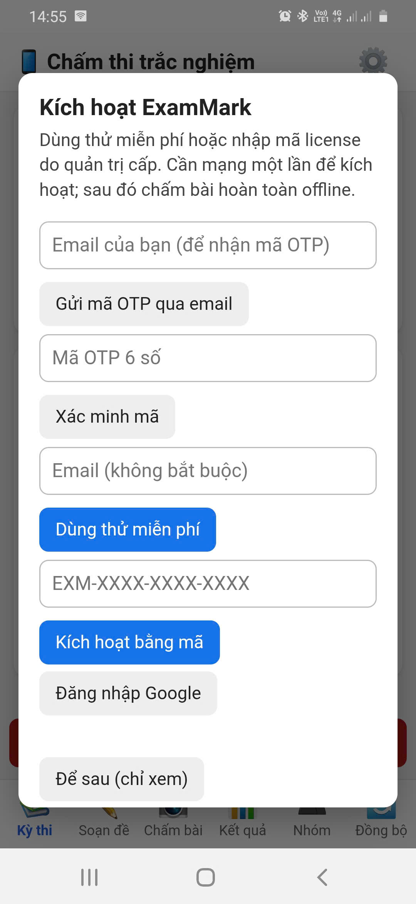
assets/img/shots/01-kich-hoat.pngMã license không hợp lệ / đã hết hạn / vượt số thiết bị: kiểm tra lại mã, hoặc liên hệ quản trị để gia hạn hoặc gỡ bớt thiết bị cũ. Thiết bị bị khoá: liên hệ quản trị. Xem thêm mục 22.
2Làm quen giao diện
Dưới cùng màn hình có 6 tab theo thứ tự công việc:
| Tab | Dùng để |
|---|---|
| 📚 Kỳ thi | Tạo mẫu phiếu, tạo kỳ thi, chọn kỳ thi đang làm việc. |
| ✏️ Soạn đề | Nhập đáp án theo mã đề, ngân hàng câu hỏi, trộn đề, quản lý thí sinh, in phiếu, sinh mã QR (mục 5–9). |
| 📸 Chấm bài | Chụp/chọn ảnh phiếu, xem kết quả nhận dạng, xác nhận chấm, sửa câu mơ hồ. |
| 📊 Kết quả | Xuất Excel/CSV, xem bài đã chấm, thống kê kỳ thi. |
| 👥 Nhóm | Kỳ thi chung của trường/tổ: giáo viên tải đề về chấm và gửi kết quả; quản trị nhóm đẩy đề, duyệt, chốt (mục 14). |
| 🔄 Đồng bộ | Xem bài đã chấm lưu trên máy, nhật ký kỹ thuật (xem mục 17). |
Nút ⚙️ ở góc trên mở Cài đặt & Đăng nhập: tài khoản, license, sao lưu Google Drive, quản lý tổ chức, hướng dẫn & gửi yêu cầu hỗ trợ.
Ở thanh tiêu đề còn có ô chọn chế độ 📱 Chấm trắc nghiệm | 🤖 Chấm tự luận | 🌐 Phòng thi online: chế độ tự luận (xem mục 15) và chế độ Phòng thi để giao bài cho học sinh làm trên trình duyệt (xem mục 16) đều có giao diện riêng.

assets/img/shots/02-man-hinh-chinh.png3Tạo mẫu phiếu
Mẫu phiếu quy định hình dạng tờ giấy và số câu từng phần. Một mẫu dùng lại cho nhiều kỳ thi. Vào tab Kỳ thi → 🆕 Tạo mẫu phiếu mới.
- Chọn Khổ giấy (A4 hoặc A5) và hướng (dọc/ngang).
- Nhập số câu Phần I (nhiều lựa chọn), Phần II (Đúng/Sai), Phần III (trả lời ngắn); chọn 4 hay 5 phương án; chọn số chữ số của số báo danh và mã đề.
- Tuỳ chọn: nhập Tiêu đề phiếu (mặc định “PHIẾU TRẢ LỜI TRẮC NGHIỆM”) và Tên kỳ thi hiển thị trên phiếu. Với A4 có thể đổi thứ tự khối câu hỏi từ trên xuống dưới.
- Bấm 🖼️ Sinh & xem trước mẫu phiếu và kiểm tra hình phiếu.

assets/img/shots/03-tao-mau-phieu.png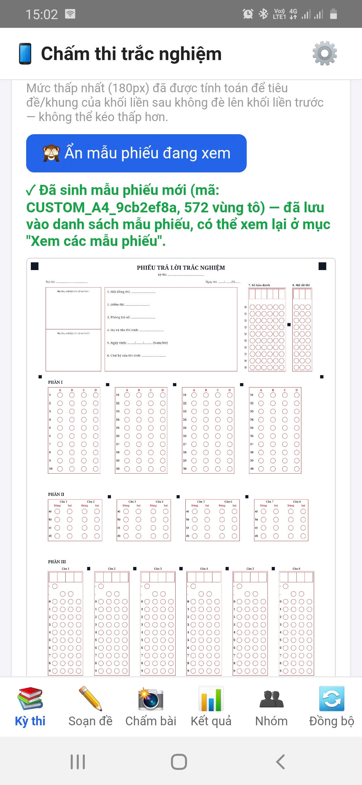
assets/img/shots/04-xem-truoc-mau-phieu.pngA5 dùng bố cục riêng, ô tô vẫn to như A4: Phần I tối đa 12 câu, Phần II tối đa 4 câu, Phần III tối đa 6 câu, số báo danh tối đa 8 chữ số, mã đề tối đa 4 chữ số. Chọn A5 thì form tự giảm số câu về mức tối đa; thứ tự khối và khoảng cách khối không áp dụng. Cần nhiều câu hơn → chọn A4.
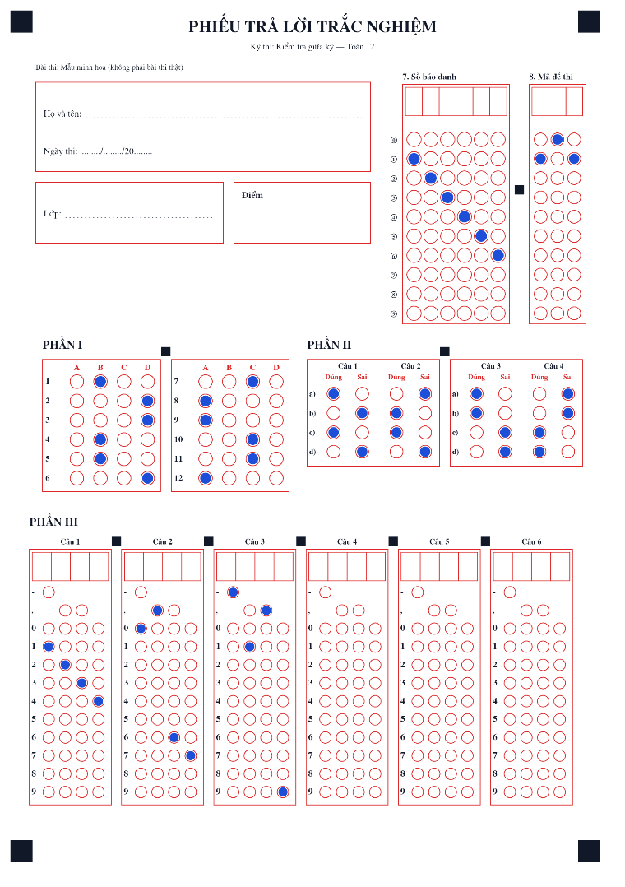
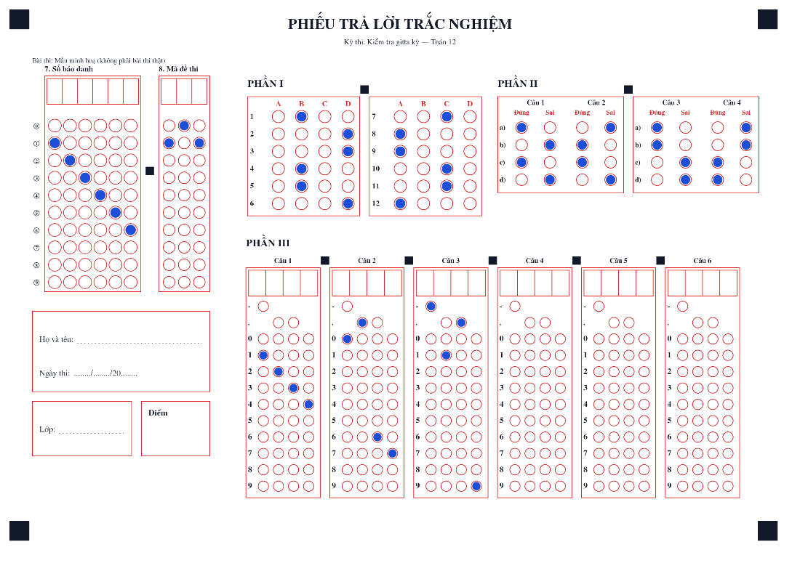
📄 Xem các mẫu phiếu hiện có liệt kê mẫu mặc định và mẫu bạn đã tạo; chọn một mẫu để xem trước, rồi 🖨️ Tải phiếu trống (PDF) của mẫu này nếu chỉ cần file in.
Tạo mẫu phiếu tuỳ chỉnh có thể chỉ có ở một số gói license.
4Tạo kỳ thi
- Tab Kỳ thi → ➕ Tạo kỳ thi mới.
- Nhập Tên kỳ thi (ví dụ “Kiểm tra 15 phút - Toán”). Nếu danh sách mẫu phiếu trống, bấm 🔄 Tải danh sách mẫu phiếu, rồi chọn mẫu phiếu dùng cho kỳ thi này.
- Bấm Tạo kỳ thi.
- Trong 📚 Kỳ thi của tôi, bấm ✅ Dùng kỳ thi này cho kỳ thi muốn làm việc. Các tab Soạn đề, Chấm bài, Kết quả sẽ làm việc với kỳ thi đang chọn.
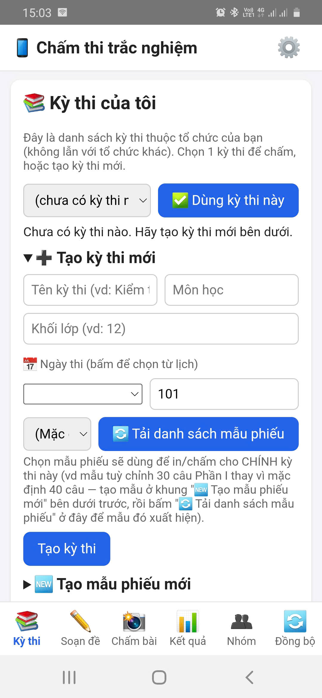
assets/img/shots/05-tao-ky-thi.pngTrước khi chấm, bắt buộc chọn một kỳ thi; nếu chưa, tab Chấm bài sẽ nhắc bạn quay lại tab Kỳ thi.
5Soạn đề & nhập đáp án
Tab Soạn đề → 📋 Xem & sửa đề hiện tại cho thấy mẫu phiếu đang dùng, các mã đề và đáp án đúng của kỳ thi. Một kỳ thi có thể có nhiều mã đề (ví dụ 101, 102 — muốn sinh nhiều mã từ một đề gốc, xem mục 7 Trộn đề); thí sinh tô mã đề ở bảng “8. Mã đề thi” trên phiếu và app tự chọn đáp án theo mã đó khi chấm.
- ➕ Thêm mã đề mới để tạo thêm mã đề.
- 👁️ Xem đáp án mã đề này để xem/sửa đáp án của mã đang chọn.
- 🖼️ Xuất ảnh/PDF đáp án trực quan (có 💾 Tải ảnh PNG và 📄 Xuất PDF) để giáo viên đối chiếu nhanh.
Quy ước ghi đáp án
| Phần | Cách ghi | Ví dụ |
|---|---|---|
| I | Một chữ cái đáp án đúng | A |
| II | 4 giá trị Đ/S theo thứ tự ý a, b, c, d | Đ,S,Đ,S |
| III | Một số, tối đa 4 ký tự kể cả dấu - và dấu phẩy (vì phiếu chỉ có 4 ô) | 12 · -3,5 · 0,67 |
Với Phần III, gõ dấu chấm hay dấu phẩy đều được — app đổi về dạng chuẩn và so khớp theo giá trị số. Nhập chữ hoặc quá 4 ký tự sẽ bị báo lỗi.
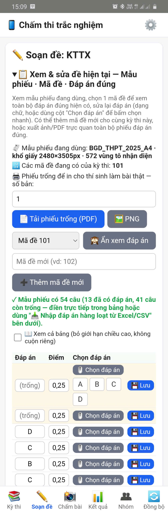
assets/img/shots/06-soan-de-dap-an.pngBa cách nhập đáp án
Gõ tay từng câu
Chọn đáp án từng câu rồi bấm 💾 Lưu các đáp án đã chọn vào mã đề đang xem.
Nhập hàng loạt từ Excel/CSV
📥 Lấy mẫu đáp án Excel (tệp có sẵn số dòng đúng với mẫu phiếu) → điền → 📤 Nhập đáp án từ file.
Quét một phiếu mẫu đã tô
Tô sẵn một phiếu đáp án đúng, rồi dùng 📷 Nhập đáp án bằng quét ảnh phiếu mẫu.

assets/img/shots/07-nhap-dap-an-excel.pngChi tiết cách quét phiếu mẫu
- In phiếu của đúng mẫu phiếu kỳ thi này và tô các đáp án đúng. SBD và mã đề trên phiếu mẫu không quan trọng, chỉ cần đúng các ô câu hỏi.
- Chọn mã đề cần điền, bấm 📷 Chụp ảnh (hoặc chọn ảnh có sẵn trong máy), rồi 🔍 Quét & nhận diện đáp án.
- Kiểm tra kết quả. Câu nào đọc không rõ (tô mờ, tô 2 đáp án, không đọc được) không tự áp dụng: bạn phải xem lại và xác nhận hoặc sửa tay trước khi lưu.
- Bấm 💾 Lưu các đáp án đã chọn vào mã đề đang xem.
Đối chiếu lại bằng ảnh/PDF đáp án trực quan sau khi nhập: một đáp án sai trong khoá sẽ làm sai điểm của cả lớp.
Ba cách nhập đáp án ở trên phù hợp khi bạn đã có đề. Nếu bạn soạn đề từ kho câu hỏi (có nội dung câu, phương án, công thức, hình), hãy dùng Ngân hàng câu hỏi (mục 6): nhặt câu → đưa vào mã đề → trộn đề (mục 7); đáp án được điền sẵn theo từng mã đề.
6Ngân hàng câu hỏi (Excel + LaTeX + hình)
Ngân hàng câu hỏi là kho câu hỏi lưu ngay trong điện thoại. Mỗi câu lưu đủ nội dung (câu dẫn, các phương án, đáp án đúng, lời giải) và phân loại (môn · khối · chủ đề · mức độ), kèm một mã câu do app tự cấp. Từ kho này bạn có thể nhặt câu để lập đề, trộn thành nhiều mã đề (mục 7) hoặc xuất ra Excel/LaTeX để in.
Vào tab Soạn đề → khung 📖 Ngân hàng câu hỏi (khung được thu gọn sẵn, bấm tiêu đề để mở). Khung này chỉ hiện khi bạn đã bấm ✅ Dùng kỳ thi này ở tab Kỳ thi.
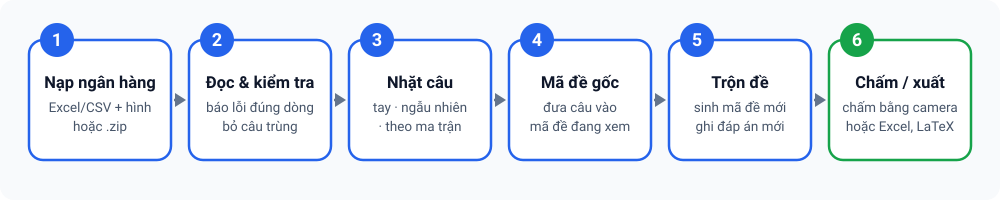
6.1 Một câu hỏi gồm những gì?
| Loại câu | Nội dung lưu | Đáp án |
|---|---|---|
| Phần I — nhiều lựa chọn | Câu dẫn + phương án A, B, C, D (E tuỳ chọn) | Một chữ cái A–E |
| Phần II — Đúng/Sai | Câu dẫn + 4 ý a, b, c, d | 4 giá trị Đúng/Sai theo thứ tự a→d |
| Phần III — trả lời ngắn | Câu dẫn | Một số, tối đa 4 ký tự (kể cả dấu - và ,) |
- Công thức viết bằng LaTeX trong
$...$(hoặc$$...$$,\( \),\[ \]), ví dụ$\dfrac{a}{\sin A}=2R$. App hiển thị công thức khi xem câu. - Hình được lưu riêng trong kho hình và gắn vào câu bằng thẻ
[[img:ten-hinh.png]]. Hình được app tự nén (tối đa khoảng 1000 px; mỗi hình không quá khoảng 1,5 MB).
6.2 Mã câu hỏi
Mỗi câu có một mã theo quy tắc MON.LOP.CD.PHAN.MUC.STT, ví dụ T.12.05.I.3.0007.
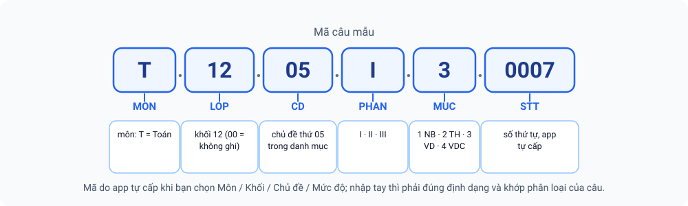
| Thành phần | Ý nghĩa |
|---|---|
MON | Mã môn 1–4 chữ in hoa: T Toán, L Vật lí, H Hoá học, SH Sinh học, V Ngữ văn, A Tiếng Anh, LS, DL, TIN, GD, CN, KHTN (thêm môn mới trong Danh mục) |
LOP | Khối, 2 chữ số (10, 11, 12); 00 = không ghi khối |
CD | Mã chủ đề, 2 chữ số, theo danh mục của (môn, khối): 01…89; 99 = chưa phân loại |
PHAN | I trắc nghiệm · II đúng/sai · III trả lời ngắn |
MUC | 1 Nhận biết · 2 Thông hiểu · 3 Vận dụng · 4 Vận dụng cao · 0 chưa phân mức |
STT | Số thứ tự 4 chữ số trong cùng nhóm MON.LOP.CD.PHAN.MUC, app tự cấp (số lớn nhất đang có + 1) |
- Mặc định là tự động: bạn chọn Môn/Khối/Chủ đề/Mức độ từ danh sách, app sinh mã. Trong file Excel, nên để trống cột
Ma_cau. - Nhập mã tay vẫn có quy tắc: mã phải đúng định dạng, khớp các trường phân loại của câu và không trùng mã khác; nếu không, app báo lỗi, chỉ ra chỗ lệch và gợi ý mã đúng.
- Đổi phân loại thì mã đổi theo (app báo trước). Nạp lại một mã cũ từ Excel (cột
Ma_cau) sẽ cập nhật câu đó, không tạo câu trùng. - Câu cũ chưa có mã chuẩn: bấm 🔢 Cấp mã chuẩn cho câu chưa có. Câu có môn không nằm trong danh mục bị bỏ qua và app nêu lý do, không gán bừa.
6.3 Danh mục môn · chủ đề · mức độ
Bấm 👁️ Xem danh mục & quy tắc mã để xem và chỉnh danh mục (lưu trên máy của bạn): thêm, đổi tên, xoá chủ đề (mã chủ đề tự cấp), ➕ Thêm môn, 📤 Xuất danh mục (Excel) / nạp lại sheet DanhMuc (cột Ma_mon, Ten_mon, Khoi, Ma_chu_de, Ten_chu_de), ↩️ Khôi phục mặc định.
Mặc định chỉ có Toán 10–12, xếp theo thứ tự chương SGK (kiểu chương trình Kết nối tri thức). Hãy đối chiếu với phân phối chương trình của trường và sửa ngay trong app. Các môn khác chưa có chủ đề: thêm tay hoặc nạp từ Excel.

assets/img/shots/18-ngan-hang-danh-muc-ma-cau.png6.4 Nạp câu hỏi từ Excel/CSV (kèm hình)
- Bấm 📥 Tải mẫu Excel. Tệp mẫu có sẵn 4 câu ví dụ và một sheet hướng dẫn.
- Điền vào sheet
CauHoi(mỗi dòng một câu). CộtMa_caunên để trống. - Chọn một lần: tệp Excel/CSV cùng các tệp hình, hoặc một tệp .zip chứa Excel và thư mục hình.
- Tuỳ chọn: nhập Môn mặc định/Khối mặc định (dùng khi ô
Mon/Khoitrống); giữ dấu tick Bỏ qua câu trùng nội dung nếu không muốn lưu câu đã có. - Bấm 🔍 Đọc & kiểm tra. Lỗi được báo đúng số dòng trong Excel; câu lỗi bị bỏ qua; thiếu hình chỉ cảnh báo. Có nút 🙈 Ẩn xem trước để thu gọn bảng.
- Bấm 💾 Lưu vào ngân hàng, hoặc 💾 Lưu + đưa luôn vào mã đề đang xem để đưa thẳng các câu vào mã đề (câu trùng sẽ dùng lại câu đã có).

assets/img/shots/16-ngan-hang-nap-excel.pngCác cột của sheet CauHoi
| Cột | Nội dung |
|---|---|
Loai | Loại câu: Phần I / II / III |
Ma_cau | Để trống để app tự cấp. Trùng một mã đã có → cập nhật câu đó |
Mon, Khoi, Chu_de, Muc_do | Phân loại. Chu_de nhận mã (05, 05 - Hàm số) hoặc tên (không phân biệt dấu); gõ tắt chỉ khớp một chủ đề thì được nhận kèm cảnh báo; không khớp → lỗi kèm gợi ý “gần giống”. Muc_do nhận 1–4, NB/TH/VD/VDC hoặc tên mức |
Cau_hoi, Hinh | Câu dẫn (có thể chứa $LaTeX$), tên tệp hình |
A…E | Phương án Phần I (cần đủ A–D; E tuỳ chọn). Với Phần II có thể dùng A–D làm 4 ý |
Y_a…Y_d | 4 ý của Phần II |
Dap_an, Diem, Loi_giai | Đáp án, điểm (tuỳ chọn), lời giải (tuỳ chọn) |
Cách ghi Dap_an: Phần I một chữ A–E; Phần II bốn giá trị như Đ,S,Đ,S, ĐSĐS, Đúng Sai Đúng Sai hoặc T F T F; Phần III một số tối đa 4 ký tự (dấu chấm tự đổi thành dấu phẩy). Tiêu đề cột đọc không phân biệt dấu và hoa/thường và nhận một số tên đồng nghĩa.
Ngân hàng nhận Excel/CSV/ZIP, chưa đọc trực tiếp .docx hay .pdf. Công thức MathType hoặc ảnh nhúng trong Word cần chuyển sang LaTeX hoặc lưu thành tệp hình riêng (gắn bằng [[img:...]]).
6.5 Xem, lọc và quản lý câu đã lưu
Mục ② Danh sách câu đã lưu (bấm 🔄 Tải danh sách; 🙈 Ẩn danh sách để thu gọn):
- Lọc bằng danh sách chọn lấy từ chính dữ liệu của bạn (môn → khối → chủ đề), cộng Loại, Mức độ, Trạng thái (chưa dùng · đã dùng · thiếu nội dung phương án · thiếu hình · chưa có mã chuẩn · trùng nội dung) và ô tìm chữ/mã. Có thể sắp xếp theo mã, mới nhất, dùng nhiều/ít, mức độ; có thống kê số câu I/II/III và theo mức của các câu đã chọn.
- Từng câu: xem chi tiết, sửa, ⧉ nhân bản, xoá.
- Hàng loạt (tick chọn nhiều câu, hoặc Chọn tất cả (đang lọc)): ➕ Đưa câu đã chọn vào mã đề đang xem · 📊 Xuất đã chọn (Excel) · 📦 Xuất đã chọn (LaTeX .zip) (có tick kèm đáp án, kèm lời giải) · 🏷️ Phân loại lại… (đổi môn/khối/chủ đề/mức, mã cấp lại) · 🗑 Xoá đã chọn.

assets/img/shots/17-ngan-hang-danh-sach-loc.png6.6 Nhặt câu để lập đề
Mục ③ Nhặt câu để tạo đề chỉ nhặt trong phạm vi bộ lọc đang chọn, ưu tiên các câu ít được dùng, báo rõ khi thiếu câu, và tick sẵn kết quả để bạn xem lại trước khi đưa vào mã đề. Ba cách chọn:
Chọn tay
Tick từng câu trong danh sách, rồi ➕ Đưa câu đã chọn vào mã đề đang xem.
Nhặt nhanh
Nhập số câu Phần I/II/III cần lấy rồi bấm Nhặt: chọn ngẫu nhiên trong phạm vi bộ lọc.
Theo ma trận
Mỗi dòng: Phần × chủ đề × mức độ × số câu; ➕ Thêm dòng rồi 🎲 Nhặt theo ma trận. Không trùng câu giữa các dòng; báo thiếu theo từng dòng.

assets/img/shots/19-ngan-hang-nhat-ma-tran.png6.7 Thêm hoặc sửa một câu bằng tay
Mục ④ Thêm / sửa một câu: bấm ➕ Thêm câu mới bằng tay (hoặc chọn sửa một câu có sẵn). Chọn loại, Môn/Khối/Chủ đề/Mức độ (mã tự sinh; tick nhập mã tay nếu cần), gõ câu dẫn (công thức dạng $x^2+1$; 🖼️ Chèn hình… để gắn hình), điền phương án A–E hoặc ý a–d, Đáp án, Điểm và Lời giải (tuỳ chọn), rồi 💾 Lưu vào ngân hàng.

assets/img/shots/20-ngan-hang-trinh-sua-cau.png👁️ Xem kho hình liệt kê các hình đã nạp (tên hình được chuẩn hoá: lấy tên tệp, chữ thường, khoảng trắng đổi thành _).
Hiện ngân hàng, kho hình và danh mục chưa nằm trong sao lưu Google Drive (sao lưu hiện theo kỳ thi). Hãy bấm 📤 Xuất cả ngân hàng ra Excel định kỳ để có bản dự phòng; hình nằm trong kho, không nằm trong tệp Excel nên cần giữ riêng bộ hình gốc.
7Trộn đề & xuất đề
Từ một mã đề gốc đã có đủ nội dung câu hỏi, ExamMark sinh ra nhiều mã đề mới (ví dụ 102, 103, 104…) với thứ tự câu và vị trí phương án khác nhau, rồi ghi lại đáp án đã trộn vào từng mã đề của kỳ thi — máy chấm nhận ngay các mã mới, không phải nhập đáp án lại.

7.1 Các bước trộn đề
- Hoàn thiện mã đề gốc: đưa câu từ ngân hàng vào (mục 6.6). Trong khung 📋 Xem & sửa đề hiện tại, chọn mã đề gốc ở danh sách mã đề (mã đề đang xem là mã sẽ được dùng để trộn).
- Mở khung 🔀 Trộn đề & xuất đề — sinh mã đề mới từ mã đề đang xem và đặt:
- Số mã đề cần sinh (1–20; mặc định 4);
- Mã đề đầu, ví dụ
102(các mã sau tăng dần); - Seed (tuỳ chọn): để trống = ngẫu nhiên; dùng lại cùng seed sẽ trộn y hệt lần trước.
- Chọn các kiểu đảo: Đảo thứ tự câu, Đảo phương án (Phần I), Đảo ý a–d (Phần II) (mặc định đều bật).
- Bấm 🔀 Xem thử để xem bảng đáp án gộp của các mã đề và các cảnh báo. Có nút 🙈 Ẩn bảng xem thử.
- Hài lòng thì bấm 💾 Lưu các mã đề vào kỳ thi. Các mã đề mới xuất hiện trong danh sách mã đề và dùng được ngay khi chấm.

assets/img/shots/21-tron-de-xem-thu.pngThí sinh tô mã đề ở bảng “Mã đề thi” trên phiếu, nên số chữ số của mã đề (ví dụ 102 là 3 chữ số) không được vượt số cột mã đề của mẫu phiếu đang dùng.
7.2 Quy tắc trộn
| Phần | App làm gì |
|---|---|
| Phần I | Đảo thứ tự câu; đảo phương án A–D (E) và ghi lại chữ cái đúng mới |
| Phần II | Đảo thứ tự câu; đảo 4 ý a–d, kèm đáp án Đúng/Sai tương ứng |
| Phần III | Đảo thứ tự câu; giữ nguyên đáp số |
- Không đảo những phương án phụ thuộc vị trí (như “Cả A và B đều đúng”, “Tất cả các đáp án trên”, “Không có đáp án nào đúng”) và những ý có nhắc tới ý khác. App cảnh báo cụ thể câu nào được giữ nguyên.
- Câu chưa lưu nội dung phương án (chỉ có đáp án chữ, ví dụ nhập từ phiếu mẫu) thì chỉ đảo được thứ tự câu.
- Các mã đề sinh ra luôn khác nhau và khác đề gốc (app thử lại tối đa 25 lần nếu trùng).
- ⧉ Nhân bản mã đề đang xem: tạo mã đề mới y nguyên câu, phương án và đáp án — tiện để sửa nhỏ thành một mã khác.
7.3 Xem và xuất các mã đề
Mục Các mã đề của kỳ thi & xuất để soạn/in bên ngoài hiển thị số câu từng phần của mỗi mã đề và có các nút:
- 👁️ Xem nội dung mã đề đang xem (có nút ẩn lại);
- 📊 Excel (đáp án + nội dung): sheet
DapAn(bảng đáp án gộp) và mỗi mã đề một sheet theo đúng mẫu; - 📦 Gói LaTeX (.zip): gồm
de_<mã>.tex, thư mụcimages/vàbang_dap_an.csv; biên dịch bằngpdflatex(gói tiếng Việt T5). Có tick .tex kèm trang đáp án và kèm lời giải.

assets/img/shots/22-tron-de-xuat-de.png- App xuất đề ở dạng Excel và LaTeX; chưa dựng sẵn PDF đề thi trong app (in đề bằng cách biên dịch LaTeX hoặc dán nội dung vào Word).
- Công thức hiển thị bằng KaTeX; một vài lệnh LaTeX hiếm có thể hiển thị khác so với khi biên dịch bằng pdflatex.
- Câu có đoạn dẫn chung cho nhiều câu (nhóm câu phải đi liền nhau) chưa được hỗ trợ.
- Trong app hiện chỉ có thêm, nhân bản và sửa mã đề; chưa có nút xoá mã đề hoặc xoá một câu khỏi mã đề.
8Danh sách thí sinh & mã QR
Vẫn trong tab Soạn đề, mục 🧑🎓 Danh sách thí sinh:
- Thêm thí sinh để nhập từng em.
- 📥 Tải file mẫu (CSV), điền, rồi Import file CSV/Excel để nhập cả lớp.
- 🔲 Sinh mã QR cho phiếu trả lời (chống nhầm phiếu): gán một mã QR cho mỗi thí sinh có trong danh sách, hoặc sinh số phiếu trắng tuỳ ý. Khi chấm, quét mã QR để app biết phiếu thuộc thí sinh nào; nếu SBD đọc từ ảnh không khớp SBD gắn với QR, app cảnh báo để bạn đối chiếu (có thể phiếu bị tráo hoặc SBD bị tô mờ).

assets/img/shots/08-danh-sach-thi-sinh.pngMã QR là chức năng hỗ trợ, không bắt buộc: nếu thí sinh tô đúng số báo danh trên phiếu, app vẫn nhận ra thí sinh từ SBD.
9In phiếu
- Tab Soạn đề → mục Phiếu trống để in cho thí sinh làm bài thật, nhập số bản.
- Bấm 📄 Tải phiếu trống (PDF), rồi in từ trình xem PDF.
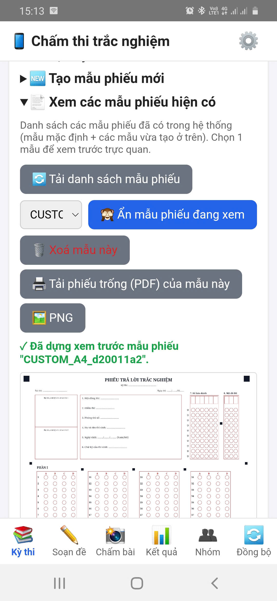
assets/img/shots/09-tai-phieu-pdf.png- Chọn tỉ lệ 100% / Kích thước thực, không chọn “Vừa trang/Fit to page” hay “Thu nhỏ để vừa” — phiếu bị co sẽ lệch vị trí ô.
- Chọn đúng khổ giấy (A4 hoặc A5) và hướng giấy (dọc/ngang) như mẫu phiếu.
- In rõ nét, tránh chế độ tiết kiệm mực/bản nháp; 4 ô vuông đen ở bốn góc phải in đậm, không bị mờ hay bị cắt mép.
- In thử một tờ, tô và quét thử trước khi in cả lớp.
10Hướng dẫn thí sinh tô phiếu
Bạn có thể in nguyên khung dưới đây dán lên bảng hoặc đọc cho thí sinh:
- Dùng bút bi xanh/đen hoặc bút chì đen mềm (2B); tô kín toàn bộ ô tròn.
- Mỗi câu chỉ tô một ô (riêng Phần II: mỗi ý a, b, c, d tô một trong hai ô Đúng/Sai).
- Phần III: tô dấu - nếu là số âm, dấu , nếu là số thập phân, rồi tô từng chữ số ở đúng cột.
- Tô số báo danh và mã đề chính xác, mỗi cột một chữ số.
- Muốn sửa: tẩy sạch ô cũ trước khi tô ô mới. Không dùng bút xoá nước làm loang phiếu.
- Không gấp, nhàu, rách phiếu; không viết hay vẽ vào 4 ô vuông đen ở góc.
11Chấm bài bằng camera
- Bảo đảm đã bấm ✅ Dùng kỳ thi này (mục 4). Mở tab 📸 Chấm bài.
- Lần đầu, chờ thông báo Đang tải thư viện xử lý ảnh (OpenCV.js) — có thể mất 10–30 giây; các lần sau nhanh hơn.
- Bấm 📷 Chụp ảnh (hoặc chọn ảnh có sẵn). Đặt phiếu phẳng, canh 4 góc phiếu vào 4 ô vuông hiển thị trên màn hình (🎯 Canh 4 góc phiếu vào 4 ô vuông).
- Xem Kết quả nhận dạng: số báo danh, mã đề, điểm tạm tính và danh sách các câu cần xem lại.
- Nếu hiện “Không xác định được đúng mã đề để chấm”: chọn đúng mã đề ở danh sách rồi bấm ✔ Áp dụng — chưa chọn thì không thể xác nhận chấm.
- Nếu hiện “SBD đọc từ ảnh không khớp SBD gắn với mã QR”: đối chiếu tên trên phiếu với thí sinh, rồi chọn ✔ Tôi đã kiểm tra, vẫn tiếp tục hoặc chọn lại đúng thí sinh.
- Kiểm tra các câu được gắn cờ, rồi bấm ✅ Xác nhận (offline). Điểm được tính ngay trên máy và bài được lưu. 💾 Lưu ảnh giữ lại ảnh phiếu làm bằng chứng.

assets/img/shots/10-cham-bai-chup.png

assets/img/shots/11-ket-qua-nhan-dang.pngÝ nghĩa các màu trên ảnh kết quả

Quy tắc quan trọng: ô không xác định (tô hai đáp án trở lên, đọc không ra) được tạm tính sai và gắn cờ; ô tô nhạt nhưng vẫn đọc được được tính như đã tô và cũng gắn cờ “Xem lại”. Cờ nghĩa là “giáo viên hãy nhìn lại”, không phải kết luận cuối.
12Xem lại & sửa câu mơ hồ
- 🔍 Xem chi tiết & sửa từng câu: bảng chi tiết bài vừa chấm với các cột Câu, Phần, Đáp án, Độ tin cậy, Trạng thái. Sửa những câu bạn thấy máy đọc sai (so với ảnh thật), rồi lưu.
- 🔍 Tra cứu & sửa bài đã nộp (bằng chứng chấm): nhập SBD rồi bấm Tìm để mở lại bài đã chấm. Nếu phát hiện chấm nhầm sau khi đã nộp, có thể sửa trực tiếp tại đây.
- Mọi lần sửa đều được ghi lại (ai sửa, lúc nào, từ đáp án gì sang gì, vì sao), để giải trình với thí sinh khi cần.
- Với kỳ thi nhóm: quản trị nhóm xem và duyệt các bài cần xem lại của giáo viên ở tab 👥 Nhóm (nút 📥 Bài cần review — xem mục 14).
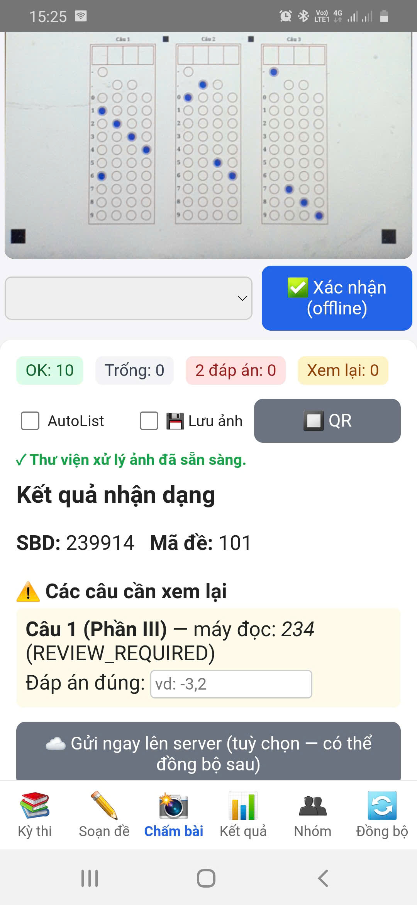
assets/img/shots/12-cau-can-xem-lai.png| Tình huống | App xử lý | Bạn nên |
|---|---|---|
| Ô tô rõ, một đáp án | Chấm bình thường | Không cần làm gì |
| Ô tô nhạt nhưng đọc được | Tính điểm + cờ “Xem lại” | Nhìn ảnh, xác nhận hoặc sửa |
| Tô 2 đáp án trở lên | Chưa xác định → tạm tính sai + cờ | Quyết định theo quy chế thi của bạn rồi sửa |
| Bỏ trống | 0 điểm câu đó | Kiểm tra nhanh ảnh nếu nghi ngờ |
13Kết quả & xuất tệp
- Mở tab 📊 Kết quả (phải đang chọn một kỳ thi).
- Bấm 📊 Xuất Excel hoặc 📄 Xuất CSV để lấy bảng điểm.
- Tệp được lưu trên máy (thường trong thư mục Tài liệu/ExamMark); mở bằng ứng dụng Tệp hoặc chia sẻ qua Zalo/email như tệp bình thường.

assets/img/shots/13-xuat-ket-qua.pngThống kê kỳ thi
Trong tab 📊 Kết quả, thẻ 📈 Thống kê kỳ thi tổng hợp điểm của kỳ thi đang chọn:
- Nhập Điểm đạt từ (mặc định 5).
- Chọn Phạm vi: Cả kỳ thi (gộp mọi mã đề) hoặc Chỉ mã đề đang chọn (có từng câu).
- Bấm 📈 Xem thống kê: điểm trung bình/cao nhất/thấp nhất, tỉ lệ đạt, thống kê theo lớp và độ chính xác từng câu — câu có tỉ lệ làm đúng thấp được tô đỏ để bạn rà lại (đề khó hay đáp án sai?).

assets/img/shots/35-thong-ke-ky-thi.png14Kỳ thi nhóm (tab Nhóm)
Kỳ thi chung (kỳ thi nhóm) dành cho trường/tổ bộ môn dùng license tổ chức: quản trị nhóm soạn một kỳ thi (đề, mã đề, đáp án, danh sách thí sinh) rồi đẩy lên “Drive chung” của nhóm; nhiều giáo viên tải kỳ thi về, chấm offline trên máy mình và gửi kết quả lên; quản trị nhóm theo dõi tiến độ, duyệt, chốt kỳ thi và lưu biên bản.
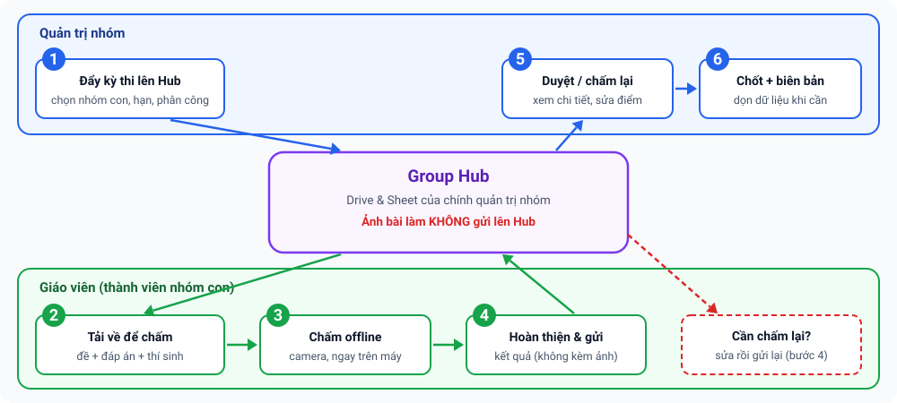
Kỳ thi và kết quả nằm trên Group Hub: một bảng tính Google (Drive/Sheet) do chính quản trị nhóm sở hữu. Nhà phát triển không giữ dữ liệu này. Ảnh bài làm không gửi lên Hub — ảnh chấm ở lại máy của giáo viên đã chấm; kết quả gửi lên chỉ gồm điểm, đáp án cuối, cờ “xem lại”, số báo danh và mã đề.
14.1 Ai làm được gì?
| Việc | Quản trị nhóm | Giáo viên (trong nhóm con) |
|---|---|---|
| Tạo/ẩn/xoá nhóm con, thêm giáo viên | ✔ | — |
| Đẩy kỳ thi; đóng nhận, chốt kỳ thi | ✔ | — |
| Tải kỳ thi của nhóm con mình và chấm | ✔ | ✔ (chỉ nhóm con được gán; nếu phân công theo lớp thì chỉ lớp được gán) |
| Gửi kết quả của chính mình | ✔ | ✔ |
| Xem kết quả của người khác; duyệt; yêu cầu chấm lại; sửa điểm | ✔ | — |
| Xin đính chính sau khi kết quả đã duyệt | — | ✔ |
“Quản trị nhóm” là chủ license tổ chức. Nhà phát triển (quản trị hệ thống) cấp/thu hồi license và gỡ thiết bị nhưng không truy cập dữ liệu kỳ thi của nhóm.
14.2 Dành cho quản trị nhóm
a) Thiết lập Group Hub (làm một lần, khoảng 10 phút)
- Mở đường dẫn dạng
…/copymà nhà phát triển gửi → Tạo bản sao bảng tính “ExamMark Hub” vào Drive của nhóm (nên dùng tài khoản Google do nhóm quản lý). Mở bản sao; nếu chưa thấy menu ExamMark Hub, tải lại trang và chờ vài giây. - Chọn menu ExamMark Hub ▸ ① Cài đặt (nhập mã license), cấp quyền khi Google hỏi (lần đầu có cảnh báo “ứng dụng chưa được xác minh”: chọn Nâng cao ▸ Đi tới … (không an toàn) — đây là script nằm trong chính bảng tính của bạn) rồi nhập mã license tổ chức.
- Chọn ② Triển khai Hub (tạo URL); hộp thoại hiện URL và nút 📋 Sao chép URL. Nếu báo cần bật Google Apps Script API: mở script.google.com/home/usersettings, bật rồi chạy lại bước ②.
- Mở ExamMark (tài khoản chủ license tổ chức) → tab 👥 Nhóm → dán URL vào ô ⚙️ Group Hub của nhóm → Lưu địa chỉ Hub.
- (Tuỳ chọn) menu Kiểm tra tình trạng trong bảng tính: tất cả ✅ là sẵn sàng.
Không chia sẻ thư mục Drive “ExamMark Hub” cho ai khác — Hub là cổng truy cập duy nhất; giáo viên không cần được cấp quyền vào Drive. Nếu license đổi hoặc hết hạn, Hub từ chối truy cập nhưng dữ liệu vẫn nằm trong Drive của bạn.
b) Tạo nhóm con và thêm giáo viên
- Tab 👥 Nhóm → ô Tên nhóm con, vd Toán → + Tạo. Nên tạo nhóm con theo môn (Toán, Lý, Hoá…).
- Mở nhóm vừa tạo, nhập email giáo viên (cách nhau bằng dấu phẩy hoặc xuống dòng) → Lưu danh sách giáo viên. Email phải thuộc danh sách thành viên của license tổ chức; một giáo viên có thể thuộc nhiều nhóm con.
Khi có nhiều nhóm, mỗi nhóm hiện gọn một dòng (số giáo viên, số kỳ thi đang mở); có ô 🔍 Lọc nhóm hoặc email… (khi trên 5 nhóm), nút Ẩn/Hiện lại (lưu trữ, khôi phục được) và 🗑 Xoá (chỉ xoá được khi nhóm không còn kỳ thi).

assets/img/shots/23-nhom-quan-tri.pngc) Đẩy kỳ thi lên Hub
- Soạn kỳ thi như bình thường ở tab Kỳ thi/Soạn đề: đề, mã đề, đáp án và danh sách thí sinh có cột Lớp.
- Tab 👥 Nhóm → mở khung ⬆️ Đẩy kỳ thi lên Hub: chọn kỳ thi, nhóm con, cách phân công và hạn chấm.
- Mọi giáo viên chấm toàn bộ: ai trong nhóm con cũng tải và chấm được toàn bộ kỳ thi.
- Phân công theo lớp/phòng thi: mỗi dòng một giáo viên theo mẫu
email: 12A, 12B; giáo viên chỉ thấy các lớp được gán.
- Bấm ⬆️ Đẩy lên Hub. Kỳ thi chuyển sang trạng thái Đang mở và hiện cho giáo viên được gán.

assets/img/shots/24-nhom-day-ky-thi.pngd) Theo dõi tiến độ, xem chi tiết và duyệt
- Thanh 📥 Cần xử lý cho biết số bài chờ duyệt, yêu cầu đính chính, kỳ thi đang mở/đã kết thúc; nút 📥 Bài cần review gom mọi bài chờ duyệt hoặc có thí sinh cần xem lại ở một nơi.
- Với mỗi kỳ thi đang mở, bấm 📋 Kết quả: thấy tiến độ (đã nộp/dự kiến), ai chưa nộp (nút 📣 Nhắc tạo lời nhắn để chia sẻ), và với mỗi giáo viên: số bài, điểm trung bình, số bài cần xem lại, trạng thái.
- 🔍 Chi tiết mở từng thí sinh của giáo viên đó (họ tên · mã đề · điểm; tick Chỉ hiện bài cần xem lại; đáp án từng câu). Có thể sửa điểm rồi bấm 💾 Lưu điểm đã sửa & trả giáo viên — bắt buộc nêu lý do, giáo viên sẽ thấy.
- Bấm Duyệt, hoặc Yêu cầu chấm lại kèm lời nhắn gửi giáo viên.
- App cảnh báo khi một thí sinh bị từ 2 giáo viên trở lên chấm (không tự chọn bài nào).
- Yêu cầu đính chính của giáo viên (sau khi đã duyệt) hiện ở khung riêng với nút Duyệt/Từ chối.

assets/img/shots/26-nhom-ket-qua-duyet.pnge) Đóng nhận, chốt kỳ thi, biên bản và dọn dẹp
| Thao tác | Ý nghĩa |
|---|---|
| Đóng nhận / Mở lại | Ngừng/nhận lại kết quả mới (khi chưa chốt). |
| Chốt | Chỉ chốt được khi mọi bài đã nộp đều được duyệt. Sau khi chốt không nhận hay sửa kết quả; hệ thống tự lập biên bản. |
| Biên bản kỳ thi | Gồm: nhóm, phiên bản đề, hình thức phân công, hạn, người đẩy; từng giáo viên chấm (lớp, số bài, điểm TB, số cần xem lại, trạng thái, người duyệt); người chưa nộp; tổng số thí sinh, điểm TB; số đính chính. Xem, chia sẻ hoặc lưu tệp văn bản. |
| ⬇️ Xuất điểm CSV | Bảng điểm tổng hợp toàn kỳ thi. |
| 🗑 Dọn kỳ thi | Xoá đề và bài chấm chi tiết khỏi Hub nhưng giữ biên bản. Không hoàn tác — nên xuất CSV trước. |
Kỳ thi đã chốt/đã dọn được gom vào mục 🗂 Kỳ thi đã kết thúc để màn hình gọn lại.

assets/img/shots/27-nhom-bien-ban.png14.3 Dành cho giáo viên (thành viên nhóm)
- Mở tab 👥 Nhóm → 🔄 Làm mới. Mục 👥 Kỳ thi chung của nhóm liệt kê các kỳ thi dành cho bạn (kèm nhóm con, trạng thái, hạn và lớp được phân công).
- Bấm ⬇️ Tải về để chấm. Kỳ thi được nhập vào máy như một kỳ thi bình thường nhưng nội dung đề chỉ đọc.
- Sang tab Kỳ thi, bấm ✅ Dùng kỳ thi này cho kỳ thi vừa tải và chấm như bình thường (mục 11) — không cần Internet khi chấm.
- Chấm xong, quay lại tab Nhóm bấm ✅ Hoàn thiện & gửi kết quả. App nhắc: sau khi gửi bạn không tự sửa được kết quả.
- Chờ quản trị duyệt. Nếu bị Cần chấm lại, sửa rồi gửi lại.

assets/img/shots/25-nhom-giao-vien.pngTrạng thái bạn sẽ thấy
| Nhãn | Nghĩa là | Bạn làm gì |
|---|---|---|
| Chưa tải về | Kỳ thi đã mở cho bạn | ⬇️ Tải về để chấm |
| Đang chấm | Đã tải, chưa gửi | Chấm xong rồi ✅ Hoàn thiện & gửi kết quả |
| Đã gửi — chờ duyệt | Quản trị chưa duyệt | Chờ |
| Đã được duyệt | Kết quả đã được chấp nhận | Cần đổi thì ✏️ Xin đính chính và nêu lý do |
| Cần chấm lại | Quản trị yêu cầu chấm lại (có lời nhắn 💬 Quản trị nhóm) | Sửa rồi gửi lại |
| Quản trị đã sửa — chờ duyệt | Quản trị đã sửa điểm; bản sửa chỉ đọc | Xem lại bản đã sửa |
- Mất mạng khi gửi: kết quả được xếp hàng (“⏳ … kết quả chờ gửi”) và tự gửi khi có mạng; bấm 🔄 Làm mới để gửi ngay và cập nhật trạng thái. Khi đang ngoại tuyến, app vẫn hiện các kỳ thi đã tải về máy.
- Đề được cập nhật: thấy cảnh báo “Đề đã được cập nhật” thì bấm ⬇️ Tải đề mới rồi chấm lại — kết quả chấm bằng đề cũ không gửi được.
- Mục 📖 Hướng dẫn kỳ thi chung trong tab Nhóm tóm tắt các bước này ngay trong app.
14.4 Vòng đời của kỳ thi và kết quả
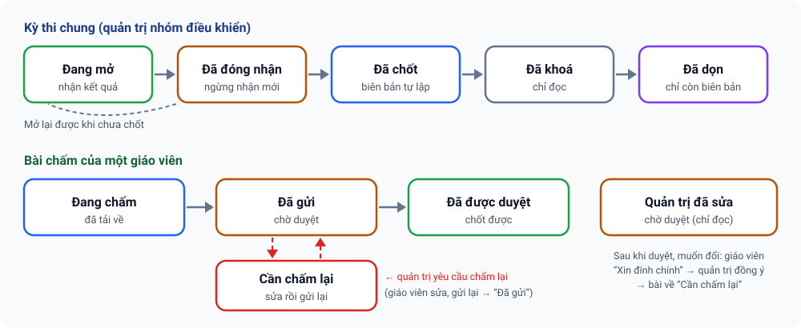
Tab hiện “Tổ chức của bạn chưa cấu hình Group Hub” nghĩa là quản trị nhóm chưa hoàn thành bước thiết lập (mục 14.2a); chỉ tài khoản quản trị mới thấy ô nhập địa chỉ Hub. Tab dành cho license tổ chức; với license cá nhân bạn dùng các tab khác như bình thường. Nếu app báo “Group Hub chưa cập nhật lên v36”, nhờ nhà phát triển cập nhật mã Hub.
15Chấm tự luận bằng AI Bản thử nghiệm
Ngoài trắc nghiệm, ExamMark có chế độ chấm bài tự luận: bạn chụp ảnh bài làm viết tay → AI chép lại bài → AI chấm từng ý theo barem → giáo viên xem bản chép, sửa điểm và duyệt. Nguyên tắc: AI đề xuất, giáo viên quyết định.

- Đây là chức năng đang trong giai đoạn thử nghiệm: hãy chấm thử vài bài, so với cách chấm của bạn rồi mới dùng cho bài thi chính thức.
- Cần Internet khi gọi AI và cần khoá API của nhà cung cấp AI do bạn tự đăng ký (Gemini, OpenAI hoặc Claude). Khoá API hoàn toàn tách biệt với license ExamMark; phí gọi AI do nhà cung cấp tính cho bạn.
- Ảnh bài làm và đề/đáp án/barem được gửi thẳng từ máy bạn tới nhà cung cấp AI mà bạn chọn (không qua máy chủ của ExamMark). Hãy kiểm tra quy định bảo vệ dữ liệu học sinh của trường trước khi dùng.
- Chữ viết tay khó đọc hoặc công thức phức tạp vẫn có thể làm AI chép/chấm sai: luôn xem bản chép trước khi tin điểm.
15.1 Điều kiện sử dụng
| Trạng thái license | Xem / xuất / xoá dữ liệu | Rà soát, nhập gói | Chấm AI, tạo kỳ thi, chia sẻ đi |
|---|---|---|---|
| Còn hạn, gói có quyền chấm tự luận | ✔ | ✔ | ✔ |
| Còn hạn, gói chỉ có quyền rà soát | ✔ | ✔ | — |
| Gói không có quyền tự luận, hết hạn, bị khoá hoặc chưa kích hoạt | ✔ | — | — |
Quyền tự luận phụ thuộc gói license (gói dùng thử mặc định có đủ). Nếu app báo chưa có quyền tự luận dù gói đã có, hãy kết nối mạng để làm mới license rồi thử lại. Cài đặt (khoá API, lệnh chấm) và xoá dữ liệu luôn dùng được.
15.2 Bật chế độ Tự luận
Ở thanh tiêu đề có ô chọn chế độ 📱 Chấm trắc nghiệm | 🤖 Chấm tự luận | 🌐 Phòng thi online (cũng có trong ⚙️ Cài đặt; chế độ thứ ba xem mục 16). Chọn Chấm tự luận → giao diện và thanh tab trắc nghiệm được ẩn, giao diện tự luận hiện ra với bốn mục: 📚 Kỳ thi · 📝 Bài làm · 📊 Kết quả · ⚙️ Cài đặt. Lựa chọn được ghi nhớ; chọn lại Chấm trắc nghiệm để trở về đúng tab đang mở.
Tab Chấm bài cố ý ẩn thanh tiêu đề để dành chỗ cho camera. Hãy chuyển sang tab khác (ví dụ Kỳ thi) hoặc mở ⚙️ Cài đặt để thấy ô chọn.

assets/img/shots/28-tu-luan-chon-che-do.png15.3 Cài đặt AI (làm một lần)
- Mở mục ⚙️ Cài đặt của chế độ tự luận → chọn Nhà cung cấp AI (Gemini / OpenAI / Claude).
- Dán khoá API của bạn. Khoá chỉ lưu trên máy này — đừng gửi khoá qua chat hay email.
- Bấm Lấy danh sách mô hình và chọn một mô hình đang dùng được (tên mô hình thay đổi theo thời gian, nên không nên tin tên mặc định). Để trống = dùng mô hình mặc định.
- Bấm Kiểm tra kết nối.
Tuỳ chọn trong mục này: Mô hình dự phòng (tự dùng khi mô hình chính báo quá tải mà thử lại vẫn lỗi); Gửi kèm ảnh khi chấm (nên bật với bài có hình vẽ/đồ thị; tốn thêm phí); Chấm 2 lần, lệch thì lấy trung bình và gắn cờ (tốn gấp đôi); Tên của tôi (hiện trong gói chia sẻ và lịch sử sửa điểm).

assets/img/shots/29-tu-luan-cai-dat-ai.png15.4 Tạo kỳ thi tự luận
- Mục 📚 Kỳ thi → + Tạo kỳ thi (hoặc Nạp bài mẫu để thử ngay với một bài Toán 10 kèm 2 thí sinh).
- Nhập Tên, Môn, Lớp, Tổng điểm.
- Nhập Đề, Đáp án và Barem: mỗi ô có thể gõ tay, hoặc lấy 📷 Từ ảnh, 📄 Từ tệp .docx/.pdf/.txt. Nếu chỉ có một tài liệu chứa cả đề, đáp án, barem, dùng 🪄 Tách tự động từ 1 tệp/ảnh: AI chia vào ba ô, bạn kiểm tra lại.
- Barem càng chia nhỏ ý, AI chấm càng nhất quán; tổng điểm các ý phải bằng Tổng điểm.
- (Tuỳ chọn) chọn Lệnh chấm riêng cho kỳ thi (mục 15.9) rồi Lưu kỳ thi.
| Định dạng nhập | Cách app xử lý |
|---|---|
| Ảnh | Gửi cho AI đọc |
| .docx | Đọc ngay trên máy: văn bản, bảng, công thức Word (chuyển sang LaTeX). Công thức MathType/ảnh nhúng và hình vẽ không thành chữ được — app đếm và cảnh báo |
| Gửi nguyên PDF cho AI đọc (hợp công thức và hình) | |
| .txt | Dùng trực tiếp |
Danh sách thí sinh (nên có): cùng cấu trúc với phần trắc nghiệm — Mã HS, Họ tên, Lớp, SBD (SBD không trùng). Dùng 📥 Mẫu CSV, 📤 Nhập CSV/Excel, 📋 Dán từ Excel hoặc ➕ Thêm từng thí sinh. Tiêu đề cột có dấu hay không dấu đều nhận. Có danh sách thì chấm theo từng thí sinh và kết quả xuất theo đúng thứ tự danh sách.

assets/img/shots/30-tu-luan-ky-thi.png15.5 Chấm bài
Mục 📝 Bài làm:
- Có danh sách thí sinh: mỗi thí sinh có nút 📷/🖼 riêng để chụp hoặc chọn ảnh của em đó (nhiều trang được). Hoặc nhập hàng loạt: chọn nhiều ảnh, app tự ghép vào thí sinh theo SBD hoặc họ tên trong tên tệp (ví dụ
SBD_002_p1.jpg; SBD phải là một cụm số nguyên vẹn). Ảnh không ghép được nằm ở Bài chưa gán để bạn gán tay — luôn xem lại mục này. - Không có danh sách: 📷 Chụp bài / 🖼 Chọn ảnh tạo một bài mới từ các ảnh vừa chọn (nhiều trang).
- Bấm nút Chép + chấm ở từng bài, hoặc ⚡ Chấm tất cả chưa chấm (có nút Dừng khi đang chạy).
- Khi máy chủ AI quá tải (lỗi 503/529), giới hạn tạm thời hoặc mất mạng, app tự chờ rồi thử lại (3 → 8 → 15 giây); nếu vẫn lỗi và bạn đã đặt Mô hình dự phòng thì chuyển sang mô hình đó. Bài còn lỗi thì bấm chấm lại sau. Sai khoá, hết tiền hay sai tên mô hình được báo kèm hướng dẫn cụ thể.

assets/img/shots/31-tu-luan-bai-lam.png15.6 Xem lại và sửa điểm
Mở một bài để thấy: ảnh bài làm (chạm để phóng to, xoay, xoá), bản chép của AI (kèm các chỗ AI không chắc — sửa nếu chép sai), điểm từng ý kèm lý do của AI, và cờ ⚠️ Cần xem lại khi AI không chắc, điểm lệch thang hoặc hai lần chấm chênh nhau. Bạn có thể sửa điểm từng ý, ghi chú (ví dụ “Ý b nên cho 0,25 vì thiếu lập luận”), Chấm lại từ bản chép sau khi sửa bản chép, rồi duyệt bài.
- Điểm tổng luôn do app cộng lại từ điểm các ý và bị chặn không vượt điểm tối đa của từng ý.
- Mọi lần sửa điểm được ghi trong ✎ Lịch sử sửa điểm.

assets/img/shots/32-tu-luan-chi-tiet-cham.png15.7 Kết quả và xuất tệp
Mục 📊 Kết quả cho biết Đã chấm x/y, điểm trung bình, số bài chờ xem lại. Xuất bằng ⬇ CSV, ⬇ Excel hoặc ⬇ JSON (tích hợp). Kết quả theo đúng thứ tự danh sách; thí sinh chưa có bài ghi “Chưa có bài”.
Hiện điểm tự luận được xuất riêng; app chưa tự cộng vào điểm trắc nghiệm của cùng thí sinh. Bạn có thể ghép hai bảng điểm bằng cột SBD trong Excel. Tệp JSON dùng cho việc tích hợp sâu về sau.

assets/img/shots/33-tu-luan-ket-qua-xuat.png15.8 Chia sẻ để đồng nghiệp rà soát
Dùng khi bạn muốn người khác kiểm tra lại điểm (ví dụ chấm chéo, kiểm tra chọn mẫu):

- Người chấm: mục 📊 Kết quả → 📤 Chia sẻ để rà soát. Chọn bài: ⚠️ Cần xem lại, ✎ Có sửa/nhận xét, Tất cả hoặc 🎲 ngẫu nhiên một số bài. Mặc định gói chỉ có điểm, bản chép và đề/đáp án/barem — KHÔNG kèm ảnh bài làm (có ô Kèm ảnh bài làm nếu cần; gói sẽ nặng và lộ ảnh bài thi). Bấm 📦 Tạo & tải gói và gửi tệp cho người rà soát.
- Người rà soát (chỉ cần quyền rà soát, không cần cùng license): 📥 Nhập gói chia sẻ / rà soát → sửa điểm, nhận xét theo bài và góp ý riêng từng ý → Gửi kết quả rà soát (tạo tệp trả lại).
- Người chấm nhập tệp trả lại, xem chênh lệch và chọn Nhận điểm của người rà soát hoặc Giữ điểm của tôi cho từng bài — app không tự đổi điểm của bạn.
Hãy gửi gói qua kênh phù hợp quy định bảo mật dữ liệu học sinh của trường.

assets/img/shots/34-tu-luan-chia-se-ra-soat.png15.9 Sửa “Lệnh chấm” (prompt)
Mục ⚙️ Cài đặt → Lệnh chấm (prompt) cho phép chỉnh hai chỉ dẫn gửi cho AI: 1) lệnh CHÉP bài từ ảnh và 2) lệnh CHẤM bài. Bạn có thể lưu thành bộ lệnh có tên, Đặt làm mặc định, chọn riêng cho từng kỳ thi, hoặc ↺ quay về nội dung mặc định. Có thể dùng các biến {{mon}}, {{lop}}, {{tong_diem}}. Phần định dạng JSON và dữ liệu (đề, đáp án, barem, bài làm) do app tự nối, nên sửa lệnh thoải mái cũng không làm hỏng kết quả.
15.10 Dữ liệu, sao lưu và dung lượng
- Dữ liệu tự luận nằm trên máy này (văn bản trong bộ nhớ của app, ảnh lưu riêng). Dữ liệu này chưa nằm trong sao lưu Google Drive hay Group Hub. Đổi máy hoặc xoá dữ liệu ứng dụng là mất nếu chưa sao lưu.
- Dùng ⚙️ Cài đặt → 💾 Sao lưu (có tick Kèm ảnh bài làm, nặng hơn) và ♻️ Khôi phục từ tệp. Tệp sao lưu không chứa khoá API.
- Mục Sao lưu/khôi phục hiện dung lượng đang dùng; nếu bộ nhớ đầy app báo ngay bằng biểu ngữ đỏ chứ không mất dữ liệu âm thầm. Nút Xoá toàn bộ dữ liệu tự luận trên máy xoá sạch khi cần.
- Chưa có cắt/làm nét ảnh (chỉ thu nhỏ và xoay 90°); chưa chấm song song nhiều bài cùng lúc.
- Chưa đọc được tệp .doc cũ; .docx có công thức dạng ảnh cần chuyển sang PDF hoặc chụp ảnh.
- Chưa đồng bộ Drive, chưa cộng điểm tự động với điểm trắc nghiệm, chưa đưa kỳ thi tự luận lên Group Hub.
16Giao bài & chấm thi online (Phòng thi) Mới
Ngoài chấm phiếu giấy bằng camera, ExamMark có thể giao bài cho học sinh làm ngay trên trình duyệt (điện thoại hoặc máy tính), hiển thị công thức Toán và hình vẽ, có đồng hồ đếm ngược; bài nộp được chấm tự động, tổng hợp theo lớp/cá nhân, kèm nhận xét và có thể gửi kết quả qua email. Tính năng này gọi là Phòng thi và thao tác được trong app lẫn trên web.
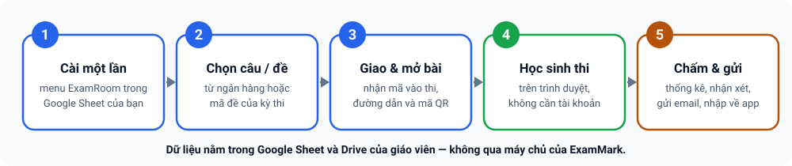
- Phòng thi chạy trên Google Apps Script của chính bạn (một bảng tính Google + Drive của bạn), không chạy trên máy chủ của ExamMark. Bạn cần tài khoản Google và làm một lần phần cài đặt bằng menu — không phải dán mã.
- Học sinh không cần tài khoản Google. Họ mở đường dẫn hoặc quét mã QR bạn gửi. Bài làm, họ tên, lớp, email và điểm nằm trong Google Sheet/Drive của bạn; nhà phát triển ExamMark không nhận những dữ liệu này (xem Quyền riêng tư).
- Chống rời màn hình chỉ là răn đe và bằng chứng, không phải phòng thi khoá (xem mục 16.5). Với bài thi quan trọng hãy có giám thị.
- Đây là chức năng mới. Trước kỳ thi thật, hãy giao thử một bài ngắn (khoảng 5 phút) cho 3–5 máy, nên có cả iPhone, để kiểm tra đường truyền, công thức và chế độ toàn màn hình.
16.1 Chấm phiếu giấy hay giao bài online?
| Chấm bằng camera (mục 11) | Giao bài online (mục này) | |
|---|---|---|
| Học sinh làm bài | Tô phiếu giấy | Trên điện thoại/máy tính, qua trình duyệt |
| Cần Internet | Không (chỉ khi kích hoạt license) | Có — giáo viên khi giao bài, học sinh khi làm bài |
| Nơi lưu dữ liệu | Trong điện thoại của giáo viên | Google Sheet và Drive của giáo viên |
| Công thức, hình vẽ | In trên đề giấy | Hiển thị ngay trong bài (công thức LaTeX, hình) |
| Chấm | Máy nhận dạng ô tô, giáo viên xem lại câu mơ hồ | Chấm tự động ngay khi nộp (không có “câu mơ hồ”) |
16.2 Cài đặt Phòng thi (làm một lần)
Mỗi giáo viên có Phòng thi riêng với địa chỉ và khoá riêng, nên nhà phát triển và giáo viên khác không xem được dữ liệu của bạn. Mọi bước làm bằng menu 🌐 ExamRoom trong Google Sheet:
- Nhận liên kết “Tạo bản sao” của bảng tính mẫu ExamRoom (bản mẫu) từ nhà phát triển (email ở cuối trang). Mở liên kết → Tạo bản sao vào Google Drive của bạn → mở bản sao. Menu 🌐 ExamRoom hiện sau vài giây (chưa thấy thì tải lại trang).
- Chọn 🌐 ExamRoom ▸ ⓪ Cài đặt nhanh. Hộp thoại sẽ hỏi khoá phòng thi: để trống = tự sinh (khuyên dùng); nếu tự đặt thì dài 12–64 ký tự gồm chữ, số hoặc
. _ -, không toàn số. - Khi Google hỏi cấp quyền (lần đầu thường hiện “ứng dụng chưa được xác minh”): chọn Nâng cao ▸ Đi tới … (không an toàn) — đây là script nằm trong tài khoản của chính bạn.
- Nếu báo cần bật Google Apps Script API: mở script.google.com/home/usersettings, bật Google Apps Script API rồi chạy lại ⓪ (các bước đã xong được giữ nguyên).
- Hộp thoại cuối hiện địa chỉ
…/exec, khoá phòng thi và đường dẫn trang giáo viên, mỗi ô có nút sao chép. Giữ lại hai thứ đầu để dán vào app (mục 16.3).

assets/img/shots/37-phong-thi-menu-examroom.pngKhi cần làm riêng từng bước, dùng các mục menu sau:
| Mục menu | Việc làm |
|---|---|
| ① Khởi tạo | Tạo các tab dữ liệu, tab Cấu hình và thư mục Drive “ExamMark ExamRoom”; đặt khoá phòng thi (hỏi, trống = tự sinh). Chạy lại an toàn, không đổi khoá đã có. |
| ② Khoá phòng thi | Xem khoá hoặc đổi khoá (phải gõ DOI KHOA để xác nhận). Khoá cũ mất hiệu lực ngay; học sinh không bị ảnh hưởng nhưng app và trang giáo viên phải nhập khoá mới. |
| ③ Tự chốt bài quá hạn | Cài bộ hẹn giờ 5 phút: bài học sinh bỏ dở được tự nộp khi hết giờ. |
| ④ Triển khai Web App | Tạo hoặc cập nhật bản triển khai và lấy địa chỉ; địa chỉ giữ nguyên khi cập nhật, nên link đã gửi học sinh không đổi. |
| ④b Dán địa chỉ nếu triển khai tay | Dự phòng khi ④ báo lỗi (xem khung dưới). |
| ⑤ Xem địa chỉ + khoá | Xem lại địa chỉ, khoá và đường dẫn trang giáo viên bất cứ lúc nào. |
| Kiểm tra tình trạng | Báo ✅/⚠️/❌ từng mục: tab, khoá, Drive, hẹn giờ, kết nối thử, hạn mức email. |
Thông báo lỗi nêu bước, mã HTTP và nguyên nhân (ví dụ Workspace của trường chặn Apps Script API, thiếu quyền). Cách dự phòng:
- Trong Apps Script: Triển khai ▸ Triển khai mới ▸ bánh răng ⚙ ▸ Ứng dụng web; Thực thi dưới danh nghĩa: Tôi; Ai có quyền truy cập: Bất kỳ ai ▸ Triển khai.
- Sao chép URL ứng dụng web (kết thúc bằng
/exec). - Quay lại Sheet ▸ 🌐 ExamRoom ▸ ④b Dán địa chỉ nếu triển khai tay ▸ dán URL. Menu tự chuẩn hoá địa chỉ, lưu lại và kiểm tra thử. Địa chỉ kết thúc bằng
/devbị từ chối.
Ai có khoá là có toàn quyền với Phòng thi của bạn (xem đáp án, điểm, danh sách thí sinh). Chỉ cấp quyền sửa Google Sheet cho người tin cậy, vì người sửa được Sheet có thể xem được khoá. Nghi ngờ lộ khoá → dùng ② Khoá phòng thi để đổi.
16.3 Kết nối từ app
Ở thanh tiêu đề, ô chọn chế độ nay có ba lựa chọn: 📱 Chấm trắc nghiệm | 🤖 Chấm tự luận | 🌐 Phòng thi online. Chọn Phòng thi online → thanh tab trắc nghiệm được ẩn và hiện một trang riêng; lựa chọn được ghi nhớ cho lần mở sau, chọn lại Chấm trắc nghiệm để về đúng tab đang mở. (Tab Chấm bài ẩn thanh tiêu đề để dành chỗ cho camera: hãy chuyển sang tab khác hoặc mở ⚙️ Cài đặt để thấy ô chọn.)
Trang Phòng thi gọn gàng, chia thành ba nhóm có thể thu/mở, và có một thanh thông báo cố định phía trên để hiện tiến độ hoặc lỗi:
| Nhóm | Dùng để |
|---|---|
| 🔌 Kết nối Phòng thi online | Dán địa chỉ ứng dụng web (…/exec) và khoá phòng thi (dạng RK-…) → Kết nối. Khi đã kết nối, nhóm này tự thu gọn và có nút 🖥 Mở trang giáo viên (web) và Ngắt kết nối. |
| 📤 Giao bài mới | Chọn câu hỏi, đặt cài đặt, giao và mở bài (mục 16.4). |
| 📋 Bài đã giao | Danh sách bài, theo dõi, kết quả, thí sinh, mở/đóng bài (mục 16.6–16.8). |

assets/img/shots/36-phong-thi-chon-che-do.pngPhòng thi dùng địa chỉ và khoá của riêng bạn; nó không lấy từ license hay Group Hub.
16.4 Giao bài mới
Mở nhóm 📤 Giao bài mới và làm theo thứ tự:
- Chọn nguồn câu hỏi (một trong hai):
- Chọn câu từ ngân hàng: tìm theo chữ, lọc theo môn, chủ đề, loại (Phần I/II/III), tick từng câu hoặc Chọn tất cả (đang lọc); ô ngẫu nhiên I · II · III + 🎲 chọn ngẫu nhiên số câu mỗi phần từ kết quả đang lọc. Cũng có thể tick câu ở Soạn đề ▸ Ngân hàng câu hỏi rồi bấm 🌐 Giao bài online với câu đã chọn để chuyển sang đây.
- Dùng kỳ thi / mã đề đã thiết lập: chọn kỳ thi và mã đề; danh sách thí sinh của kỳ thi được dùng luôn làm danh sách dự thi (mã vào thi = mã HS, PIN tự sinh).
- Nhập Tên bài thi, Thời gian (phút) (mặc định 45), Thang điểm (mặc định 10); tuỳ chọn Mở từ và Đóng lúc.
- Chọn cách vào thi và các cài đặt (bảng bên dưới).
- Nếu nguồn là ngân hàng: dán danh sách thí sinh, mỗi dòng
Mã HS, Họ tên, Lớp, Email, PIN(có thể bỏ các cột phía sau; PIN trống = tự sinh 4 số). Nếu chọn cách vào “Mở: nhập họ tên + lớp” thì không cần danh sách. - Bấm 🚀 Giao bài & mở. App đưa các hình còn thiếu lên Drive, lưu bản chụp (snapshot) bài thi, lưu danh sách rồi mở bài. Nếu chưa muốn cho vào thi, bấm 💾 Lưu nháp (chưa mở) và mở sau bằng nút ▶ ở nhóm Bài đã giao.
| Cài đặt | Ý nghĩa |
|---|---|
| Vào bằng mã HS (danh sách) / Mở: nhập họ tên + lớp | Cách thứ nhất: học sinh nhập mã HS (kèm PIN nếu bật Yêu cầu PIN) và phải có trong danh sách. Cách thứ hai: ai có đường dẫn cũng vào được bằng họ tên + lớp. |
| Trộn câu · Trộn A–D · Trộn ý a–d | Mỗi học sinh nhận một tờ đề riêng (thứ tự câu, thứ tự phương án, thứ tự ý Đúng/Sai khác nhau). Phương án kiểu “Cả A và B”, “Tất cả đều đúng” được giữ nguyên vị trí. Câu thuộc một nhóm có đoạn dẫn chung luôn đi liền nhau, đúng thứ tự. Đáp án luôn được quy về thứ tự gốc trước khi chấm. |
| Chống rời màn hình | Bật/tắt; Toàn màn hình; cho phép N lần (mặc định 3) rồi tự nộp hoặc chỉ ghi nhật ký. |
| Báo điểm cho học sinh | Khi tôi công bố (mặc định) · Ngay sau khi nộp · Không báo (chỉ gửi email); cùng các ô chọn nội dung được xem: điểm, theo phần, chủ đề, từng câu, đáp án, lời giải, nhận xét (mặc định đáp án và lời giải đang tắt). |
Giao xong, app hiện mã vào thi, đường dẫn (có nút Sao chép) và mã QR để chiếu lên màn hình lớp. Nếu có cảnh báo (thiếu hình trong kho, chưa mở được bài) thì hiện ngay dưới đó.

assets/img/shots/38-phong-thi-giao-bai.png
assets/img/shots/39-phong-thi-ma-qr.png- Chọn lẻ một câu của nhóm có đoạn dẫn thì app vẫn giao đủ cả nhóm: tự thêm các câu còn thiếu, báo “Đã thêm N câu cùng nhóm” và xếp lại cho đúng thứ tự.
- Sửa ngân hàng sau khi giao không làm đổi bài đã giao, vì bài được lưu dưới dạng bản chụp.
- Câu cũ chỉ có đáp án chữ, không có nội dung phương án thì không giao online được; app nói rõ câu nào cần bổ sung.
- Nút ☁ Chỉ đưa câu đã chọn (hoặc cả ngân hàng) lên Phòng thi chỉ đưa câu lên để bạn chọn câu và soạn bài ngay trên trang giáo viên (web), chưa giao bài. Trang web chưa tự bổ sung câu còn thiếu của nhóm có đoạn dẫn: hãy tick đủ cả nhóm (hệ thống cảnh báo khi nhóm chỉ còn một câu).
16.5 Học sinh làm bài
Gửi cho học sinh đường dẫn (hoặc cho quét mã QR). Học sinh không cần tài khoản Google.
- Mở đường dẫn. Mã bài thi đã được nhập sẵn. Nhập mã học sinh / SBD (và PIN nếu có) hoặc họ tên và lớp, có thể nhập email nếu muốn nhận kết quả → Tiếp tục.
- Đọc quy chế, tick Tôi đã đọc và đồng ý, bấm Bắt đầu làm bài (trình duyệt có thể xin vào toàn màn hình).
- Làm bài: Phần I chọn A–D (hoặc A–E), Phần II chọn Đúng/Sai từng ý, Phần III điền số (tối đa 4 ký tự, dùng dấu phẩy cho số thập phân, ví dụ
-1,5). - Bấm Nộp bài; hệ thống nhắc nếu còn câu chưa làm.
- Xem đề tổng thể bất kỳ lúc nào: lưới câu (đã làm, đang làm, đã đánh dấu), 📋 Tổng quan đề (mọi câu cùng đáp án đã chọn, bấm để nhảy tới câu) và 📄 Xem toàn đề (cuộn hết đề). Có thể ⚐ Đánh dấu xem lại từng câu.
- Đồng hồ chạy theo giờ máy chủ, nên đổi giờ trên máy không có tác dụng. Còn 5 phút đồng hồ chuyển vàng, còn 1 phút chuyển đỏ; hết giờ bài tự nộp.
- Tự lưu liên tục. Mất mạng thì app giữ bài và thử lại. Nếu tải lại trang hoặc đổi máy, học sinh đăng nhập lại để làm tiếp; thời hạn không đổi.
- Câu thuộc nhóm có đoạn dẫn chung hiển thị kèm dòng “Sử dụng thông tin sau để trả lời các câu từ X đến Y”.
- Sau khi nộp, học sinh thấy gì tuỳ chính sách bạn đặt: chỉ “đã ghi nhận”, hoặc điểm, theo phần, chủ đề, từng câu (kèm đáp án, lời giải, nhận xét nếu cho phép). Có thể xem lại bằng đường dẫn riêng ghi trong email kết quả.

assets/img/shots/40-phong-thi-hoc-sinh.png| Làm được | Không làm được (trình duyệt không cho phép) |
|---|---|
| Phát hiện chuyển tab/ứng dụng, mất tiêu điểm, thoát toàn màn hình; phủ kín đề bằng lớp cảnh báo (đồng hồ vẫn chạy). Ghi mỗi lần rời ngay lên máy chủ; đủ N lần thì tự nộp. Chặn sao chép, dán, chuột phải, in, lưu. Mỗi em một tờ đề xáo khác nhau. | Khoá hệ điều hành; chặn chụp màn hình; chặn thiết bị thứ hai; chặn chia đôi màn hình. Thiết bị không hỗ trợ toàn màn hình (iPhone) vẫn bị theo dõi chuyển tab nhưng không vào được toàn màn hình. |
Vì vậy đây là răn đe và bằng chứng, không phải phòng thi khoá. Với thi quan trọng: có giám thị, đề ngắn, bật trộn đề và xem cột Rời MH khi chấm. Việc tải lại trang không bị tính là rời màn hình.
16.6 Theo dõi, quản lý bài đã giao
Nhóm 📋 Bài đã giao liệt kê từng bài với mã vào thi, trạng thái (Nháp · Đang mở · Đã đóng), số câu, số thí sinh trong danh sách, số đang làm và số đã nộp. Các nút ở cuối mỗi dòng:
| Nút | Chức năng |
|---|---|
| 📡 Theo dõi | Xem số liệu và từng thí sinh: đang làm (đã trả lời bao nhiêu câu), đã nộp/tự nộp kèm điểm, số lần rời màn hình, chưa vào thi. Tự làm mới sau 10 giây. Có nút +10′ cộng thời gian cho em đang làm và Làm lại cho phép em đó thi lại. |
| 📊 Kết quả | Xem điểm, thống kê, nhận xét, gửi email (mục 16.7). |
| 👥 Thí sinh | Xem danh sách kèm PIN; thêm hoặc cập nhật thí sinh bằng các dòng Mã HS, Họ tên, Lớp, Email, PIN. |
| ▶ / ⏹ | Mở bài đang ở trạng thái Nháp / đóng bài đang mở. |
| 🔗 | Lấy lại đường dẫn của bài. |
| 🗑 | Xoá bài. |
Bài đã có người làm vẫn sửa được đáp án, điểm và lời giải (không đổi tập câu); hệ thống tự chấm lại mọi bài. Trang giáo viên trên web (🖥 Mở trang giáo viên (web)) làm được các việc tương tự và dùng thuận tiện hơn trên máy tính.

assets/img/shots/41-phong-thi-theo-doi.png16.7 Kết quả, nhận xét và gửi email
Bấm 📊 ở dòng bài thi:
- Số liệu: số bài, điểm trung bình, trung vị, cao nhất, thấp nhất, tỉ lệ từ 5 điểm; chọn Cả bài hoặc từng lớp. Mở phần Theo lớp · chủ đề · từng câu để xem kết quả theo lớp, theo chủ đề và từng câu (% đúng, % bỏ trống; trên web có thêm độ phân biệt và lựa chọn nhiễu).
- Bảng điểm: hạng, mã, họ tên, lớp, điểm, số lần rời màn hình, tình trạng gửi email; nút Chi tiết cho từng em (điểm theo câu, nhận xét).
- Công bố cho học sinh / Ẩn kết quả (khi chọn báo điểm “khi tôi công bố”); ♻ Chấm lại; ⬇ Xuất Excel trong app (trên web xuất CSV).
Nhận xét do hệ thống tạo theo luật, không dùng AI, ở ba mức: tổng thể cả bài/lớp, từng học sinh (xếp loại, so với trung bình, phần mạnh/yếu, chủ đề cần ôn) và từng câu (đúng/sai/đúng k ý/bỏ trống, kèm đáp án và lời giải nếu bạn cho phép). Bạn có thể viết đè ở cả ba mức và bấm Về tự động để quay lại nhận xét tự động.
Gửi kết quả qua email: tick nội dung muốn gửi (điểm, theo phần, chủ đề, từng câu, đáp án, lời giải, nhận xét, đường dẫn xem chi tiết), bấm Xem số thư để biết sẽ gửi bao nhiêu thư, rồi ✉ Gửi cho cả bài, một lớp hoặc từng em. Hệ thống kiểm tra hạn mức trước khi gửi và báo lỗi theo từng thư.

assets/img/shots/42-phong-thi-ket-qua.png- Tick công thức dạng ảnh (dựng trên máy này) để thư hiển thị công thức và hình thành ảnh nhúng trong thư thay vì mã LaTeX. Lần gửi đầu cho một bài có thể mất vài phút; các lần sau dùng lại ảnh đã tạo.
- Ảnh được dựng bằng trình duyệt của máy bạn: chạy tốt trên Chrome, Edge, Firefox và Android. Safari/iOS có thể chặn; khi đó hệ thống báo rõ và gửi phần đó dạng chữ (chưa thử trên thiết bị Apple thật).
- Thư chưa kèm đoạn dẫn chung của nhóm câu (đoạn dẫn chỉ hiện ở trang thi và trang xem kết quả).
- Hạn mức email của Google: khoảng 100 thư/ngày với tài khoản thường, 1 500 thư/ngày với Google Workspace. Vượt hạn mức thì hệ thống từ chối gửi; học sinh vẫn xem được kết quả bằng đường dẫn hoặc khi bạn công bố.
16.8 Nhập kết quả online vào kỳ thi trong app
Muốn bài làm online trở thành bài đã chấm của một kỳ thi trong app (cùng thống kê, xuất Excel và kết quả chung với bài quét bằng camera):
- Nhóm 📋 Bài đã giao → 📊 ở bài cần nhập → 📥 Nhập vào kỳ thi trong App. Nếu bài được giao từ một mã đề, kỳ thi và mã đề được chọn sẵn; nếu giao từ câu ngân hàng, hãy tự chọn kỳ thi và mã đề.
- Bấm Xem trước (chưa ghi gì): app cho biết số câu khớp, số bài sẵn sàng nhập, số em đã có bài trong app và số em chưa có trong kỳ thi.
- Nếu còn câu online không khớp câu nào của mã đề, việc nhập bị chặn (nhập sẽ cho điểm sai) và app liệt kê câu nào. Câu được khớp theo thứ tự: mã nội bộ của câu → mã câu → loại câu và nội dung (phải duy nhất).
- Em chưa có trong kỳ thi: bỏ qua, hoặc tick Tạo thí sinh còn thiếu trong kỳ thi (mã HS = SBD, giữ họ tên và lớp từ bài online).
- Bấm 📥 Nhập … bài. Đáp án được quy về thứ tự gốc của từng câu dù mỗi em làm một tờ đề xáo khác nhau. Sau khi nhập, app so điểm vừa chấm với điểm online; lệch hơn 0,005 thì cảnh báo (thường do đáp án được sửa ở một phía).
- Không nhập trùng: em đã có bài trong app thì được bỏ qua, nên chạy lại an toàn.
- Mỗi bài nhập tính 1 lượt vào hạn mức quét của giấy phép, như bài quét bằng camera. Kỳ thi đã khoá hoặc hết hạn mức thì app báo lỗi, không nhập một phần âm thầm.

assets/img/shots/43-phong-thi-nhap-ky-thi.png16.9 Dữ liệu, bảo mật và giới hạn
- Dữ liệu nằm ở đâu: ngân hàng đã đưa lên, bài thi (có đáp án), bài làm, họ tên, lớp, email, PIN và điểm nằm trong Google Sheet và Drive của bạn. PIN lưu dạng rõ trong Sheet để bạn phát lại cho học sinh, vì vậy hãy chỉ chia sẻ Sheet cho người tin cậy. Gói bài thi chứa đáp án nằm trong Drive, không có địa chỉ công khai; đáp án và lời giải không nằm trong dữ liệu gửi tới học sinh khi đang thi.
- Bảo vệ truy cập: mọi thao tác của giáo viên cần khoá phòng thi (nhập sai nhiều lần bị khoá tạm); mỗi học sinh có phiên làm bài riêng; nhập sai PIN nhiều lần trong thời gian ngắn bị khoá tạm.
- Quá hạn: bài nộp muộn chỉ tính phần đã tự lưu trước hạn; bài bỏ dở được hệ thống tự chốt.
- Số học sinh vào thi cùng lúc: Google giới hạn số lượt chạy đồng thời của một tài khoản. Nên để không quá khoảng 150 em vào thi cùng lúc; lớp đông hãy giãn giờ vào thành vài đợt.
- Hình trong câu hỏi nên nhỏ hơn khoảng 1,5 MB mỗi hình. Mỗi bài thi nên có không quá khoảng 1 500 bài nộp để xem kết quả nhanh.
- Chưa kiểm chứng trên thiết bị Apple thật: toàn màn hình, ảnh công thức trong email. Hãy thử trước như đã nêu ở đầu mục.
- Giáo viên/nhà trường là bên kiểm soát dữ liệu học sinh trong Phòng thi: hãy thông báo cho học sinh/phụ huynh khi cần (xem Quyền riêng tư).
17Tab Đồng bộ
Tab 🔄 Đồng bộ hiển thị bài đã chấm lưu trên máy (offline), nút 🗑️ Xoá dữ liệu test trên máy này (dùng để dọn các bài thử) và Nhật ký kỹ thuật — khi gặp lỗi, bạn có thể sao chép nhật ký này gửi cho nhà phát triển kèm ảnh chụp màn hình.
Việc sao lưu dữ liệu sang nơi khác được làm ở mục Sao lưu Google Drive (xem tiếp).
18Sao lưu Google Drive (tuỳ chọn)
- Bấm ⚙️ → ☁️ Sao lưu Google Drive cá nhân.
- Bấm Kết nối Google Drive và đăng nhập tài khoản Google của bạn; đồng ý quyền truy cập.
- Bấm Sao lưu ngay. Tệp sao lưu được lưu trong Google Drive của chính bạn.
ExamMark chỉ xin quyền truy cập các tệp do chính ExamMark tạo (phạm vi drive.file), không đọc được các tệp khác trong Drive. Nhà phát triển không có mã truy cập Drive của bạn. Xem thêm Quyền riêng tư.

assets/img/shots/14-sao-luu-drive.pngDữ liệu chính nằm trên điện thoại: gỡ app hoặc xoá dữ liệu ứng dụng sẽ làm mất dữ liệu chưa sao lưu. Hãy sao lưu và xuất Excel sau mỗi kỳ thi, và trước khi đổi điện thoại.
Chưa nằm trong sao lưu Drive: ngân hàng câu hỏi, kho hình và danh mục (mục 6), và dữ liệu của chế độ chấm tự luận (mục 15). Hãy xuất Excel ngân hàng, hoặc dùng Sao lưu riêng của chế độ tự luận.
19Tổ chức & thành viên (license tổ chức)
Dành cho người quản trị của trường/tổ bộ môn, trong ⚙️ Cài đặt & Đăng nhập:
- ➕ Thêm thành viên trực tiếp (vào ngay, không cần duyệt) bằng email Google của đồng nghiệp; Khóa/Mở khóa và Mời từng thành viên trong bảng thành viên.
- Hạn mức thiết bị: tổng số “chỗ” do gói/nhà phát triển đặt. Ô mặc định đặt số máy tối đa mỗi thành viên (0 = không giới hạn riêng); cột Máy / tối đa trong bảng thành viên cho phép đặt riêng từng người; bấm Lưu hạn mức thiết bị. Mọi hạn mức đều bị giới hạn bởi tổng của license.
- Quy tắc “giữ chỗ”: chỗ của license = thiết bị đang hoạt động + chỗ đang được giữ. Khi một thiết bị bị gỡ hoặc một thành viên bị xoá khỏi danh sách, chỗ đó được giữ cho đúng tài khoản ấy trong một thời gian (mặc định 30 ngày) rồi tự trả; trong thời gian giữ, chính tài khoản đó đổi máy hoặc được thêm lại sẽ dùng lại chỗ ngay, còn người khác chưa chiếm được. App hiển thị “đã dùng a + h / M chỗ”, danh sách chỗ đang giữ và ngày hết hạn giữ.
- Gỡ thiết bị: quản trị tổ chức chỉ xem danh sách thiết bị; việc gỡ thiết bị đã kích hoạt (máy cũ, mất máy) do nhà phát triển thực hiện — liên hệ qua 📩 Gửi yêu cầu hỗ trợ hoặc email.
- Bài cần review của giáo viên nay được xem ở tab 👥 Nhóm (nút Mở tab Nhóm trong khung quản trị) — xem mục 14.
- 📖 Hướng dẫn & hỗ trợ: 📖 Hướng dẫn trực tuyến mở trang hướng dẫn (khi license có cấu hình địa chỉ), và 📩 Gửi yêu cầu hỗ trợ gửi thắc mắc/báo lỗi tới quản trị hệ thống; bấm Xem yêu cầu của tôi để xem phản hồi. Nội dung gửi chỉ gồm những gì bạn nhập, không kèm dữ liệu kỳ thi.
Nếu tài khoản của bạn không thuộc trường/nhóm nào thì không có chức năng quản lý thành viên. Muốn dùng chung với đồng nghiệp: tạo trường/nhóm mới ở mục Tạo trường/nhóm mới rồi mời đồng nghiệp vào bằng mã mời.

assets/img/shots/15-quan-ly-to-chuc.png20Thử nhanh bằng phiếu mô phỏng
Chưa có phiếu thật để thử? Tab Soạn đề → 🧪 Sinh ngẫu nhiên bài test → 🧪 Sinh phiếu ngẫu nhiên (PDF + CSV đáp án chuẩn):
- App sinh các phiếu đã tô sẵn như học sinh thật (đúng, sai, bỏ trống, tô mờ, tô 2 đáp án xen kẽ) — có thể gán SBD theo đúng thí sinh trong danh sách.
- Xuất ra PDF (mỗi phiếu một trang) kèm CSV đáp án chuẩn để đối chiếu xem điểm máy chấm có đúng không.
- In ra (hoặc hiển thị trên màn hình khác) rồi chụp bằng chức năng Chấm bài để làm quen toàn bộ luồng. Điểm in trên phiếu là điểm tạm tính (ô chưa xác định tính sai).
- Xong nhớ bấm 🗑️ Xoá dữ liệu test trên máy này ở tab Đồng bộ.
Phiếu mô phỏng chỉ để thử, không dùng cho thi thật.
21Mẹo chụp cho chấm chính xác
| Nên | Tránh |
|---|---|
| Đặt phiếu phẳng trên mặt bàn tối màu, đủ sáng, ánh sáng đều | Chụp khi phiếu cong, nhàu hoặc đang cầm trên tay |
| Giữ điện thoại song song với tờ giấy, thấy trọn cả 4 ô vuông góc | Chụp nghiêng nhiều, cắt mất một góc |
| Dùng ánh sáng gián tiếp (đèn trần, cửa sổ) | Bóng tay/điện thoại đổ lên phiếu; đèn flash gây chói loá |
| Chờ ảnh nét rồi mới chụp; lau ống kính | Ảnh rung, mờ |
| Kiểm tra mục “Kết quả nhận dạng” trước khi xác nhận | Bấm xác nhận liên tục mà không nhìn các câu gắn cờ |
22Xử lý sự cố
| Hiện tượng | Cách xử lý |
|---|---|
| Không cài được APK / bị chặn | Cho phép “Cài ứng dụng không rõ nguồn” cho trình duyệt/ứng dụng Tệp; nếu Play Protect cảnh báo, chọn “Vẫn cài đặt” khi bạn tải từ nguồn chính thức. Kiểm tra mã SHA-256 nếu nghi ngờ tệp lỗi. |
| Màn hình báo “Tải quá lâu (>25s)” | Kiểm tra Internet, đóng và mở lại app. Nếu vẫn vậy, gửi ảnh chụp màn hình cho nhà phát triển. |
| Không kích hoạt được | Kiểm tra kết nối mạng, nhập lại mã license không thừa khoảng trắng; mã đã hết hạn hoặc đủ số thiết bị thì liên hệ quản trị/nhà phát triển (lưu ý: chỗ của tài khoản vừa bị gỡ được giữ một thời gian, xem mục 19). |
| App yêu cầu kết nối mạng để tiếp tục quét/chấm | Đã quá lâu chưa xác thực license. Bật Internet một lần để app làm mới license. |
| Chờ lâu ở tab Chấm bài lần đầu | Thư viện xử lý ảnh đang tải (10–30 giây). Chờ hết thông báo rồi chụp. |
| Không nhận được 4 góc / kết quả lệch | Chụp lại theo mục 21: phẳng, đủ 4 ô vuông, đủ sáng. Kiểm tra bản in đã đúng 100% chưa. |
| “Không xác định được đúng mã đề” | Thí sinh tô thiếu/sai mã đề hoặc mã đề chưa khai báo trong kỳ thi. Chọn đúng mã đề ở danh sách rồi bấm Áp dụng. |
| Cảnh báo SBD không khớp mã QR | Đối chiếu tên và ảnh phiếu với thí sinh; có thể phiếu bị tráo hoặc SBD bị tô mờ. |
| Phần III đúng nhưng không được điểm | Kiểm tra đáp án trong khoá: phải là số, tối đa 4 ký tự. Gõ 0.67 hay 0,67 đều được, nhưng không dùng chữ hay khoảng trắng giữa số. |
| Nạp Excel ngân hàng câu hỏi báo lỗi dòng nào đó | Mở bảng xem trước sau 🔍 Đọc & kiểm tra: lỗi nêu đúng số dòng Excel và lý do. Sửa trong Excel rồi nạp lại. Câu lỗi bị bỏ qua; thiếu hình chỉ là cảnh báo. |
| Câu hỏi nạp vào bị “bỏ qua” | Có thể câu trùng nội dung với câu đã lưu (bỏ dấu tick Bỏ qua câu trùng nội dung nếu muốn lưu), hoặc Ma_cau đã tồn tại (câu sẽ được cập nhật chứ không tạo mới). |
| Báo lỗi mã câu khi nhập mã tay | Mã phải đúng dạng MON.LOP.CD.PHAN.MUC.STT, khớp phân loại của câu và không trùng mã khác. Dùng mã tự động để tránh lỗi (mục 6.2). |
| Trộn đề cảnh báo một số câu không đảo phương án | Câu có phương án phụ thuộc vị trí (“Cả A và B…”, “Tất cả…”) hoặc chưa lưu nội dung phương án được giữ nguyên; chỉ thứ tự câu đổi. Xem mục 7.2. |
| Tab Nhóm báo “Tổ chức của bạn chưa cấu hình Group Hub” | Quản trị nhóm chưa thiết lập Hub (mục 14.2a). Chỉ tài khoản quản trị mới thấy ô nhập địa chỉ Hub. |
| Kỳ thi nhóm: “Đề đã được cập nhật” | Bấm ⬇️ Tải đề mới rồi chấm lại; kết quả chấm bằng đề cũ không gửi được. |
| Kỳ thi nhóm: kết quả chưa gửi được | Xem dòng “⏳ … kết quả chờ gửi”; bật mạng rồi bấm 🔄 Làm mới. Kết quả được giữ lại và tự gửi khi có mạng. |
| Quản trị nhóm không chốt được kỳ thi | Chỉ chốt được khi mọi bài đã nộp đều được duyệt. Mở 📋 Kết quả để xem bài nào còn chờ duyệt hoặc cần chấm lại. |
| Chế độ tự luận: nút chấm bị mờ / báo thiếu quyền | License có thể chưa có quyền tự luận hoặc đã hết hạn. Kết nối mạng để làm mới license; nếu vẫn thế, liên hệ nhà phát triển. Xem/xuất/xoá dữ liệu vẫn dùng được. |
| Chế độ tự luận: “Chưa nhập khoá API”, lỗi sai khoá/hết tiền/sai tên mô hình | Vào ⚙️ Cài đặt của chế độ tự luận: nhập khoá, Lấy danh sách mô hình để chọn đúng tên, rồi Kiểm tra kết nối. Hết tiền thì nạp thêm ở nhà cung cấp AI. |
| Chế độ tự luận: báo máy chủ AI quá tải (503/529) | Lỗi phía nhà cung cấp, không phải mạng của bạn. App tự thử lại và có thể chuyển sang mô hình dự phòng; bài còn lỗi thì chấm lại sau. |
| Chế độ tự luận: ảnh không tự ghép vào thí sinh | Tên tệp cần có SBD là một cụm số nguyên vẹn (ví dụ SBD_002_p1.jpg). Ảnh chưa ghép nằm ở Bài chưa gán — gán tay. |
| Chế độ tự luận: biểu ngữ đỏ “Bộ nhớ đầy” | Dữ liệu mới chưa được lưu. Sao lưu (⚙️ Cài đặt ▸ Sao lưu), xoá bớt kỳ thi/ảnh cũ rồi tiếp tục. |
| Không thấy ô chọn chế độ Trắc nghiệm/Tự luận/Phòng thi | Tab Chấm bài ẩn tiêu đề để rộng chỗ camera. Chuyển sang tab khác hoặc mở ⚙️ Cài đặt. |
| Phòng thi: “Chưa nạp được module Phòng thi” | Đăng nhập/kích hoạt ở ⚙️ Cài đặt rồi tải lại trang (hoặc đóng và mở lại app). |
| Phòng thi: Google Sheet không có menu 🌐 ExamRoom | Chờ vài giây rồi tải lại trang. Hãy mở đúng bản sao bạn vừa tạo từ liên kết “Tạo bản sao” của nhà phát triển. Nếu vẫn không có menu, gửi ảnh chụp màn hình cho nhà phát triển. |
| Phòng thi: menu ④ Triển khai báo lỗi | Đọc dòng “Chi tiết kỹ thuật” trong thông báo (nêu nguyên nhân: chưa bật Apps Script API, Workspace của trường chặn, thiếu quyền…). Nếu không khắc phục được, triển khai tay rồi dùng ④b Dán địa chỉ (mục 16.2). |
| Phòng thi: học sinh mở link lại thấy trang đăng nhập Google | Bản triển khai phải đặt Thực thi dưới danh nghĩa: Tôi và Ai có quyền truy cập: Bất kỳ ai. Chạy lại menu ④ Triển khai (menu tự kiểm tra thiết lập này) hoặc sửa bản triển khai tay. |
| Phòng thi: app báo sai khoá hoặc không kết nối được | Lấy lại địa chỉ và khoá bằng menu ⑤ Xem địa chỉ + khoá. Nếu bạn vừa đổi khoá ở menu ②, phải nhập khoá mới ở app và trang giáo viên. |
| Phòng thi: học sinh báo “Mã học sinh không có trong danh sách” hoặc “Mã PIN không đúng” | Xem mã và PIN ở nút 👥 của bài. Nhập sai PIN nhiều lần liên tiếp sẽ bị khoá tạm vài phút. Có thể đổi sang cách vào “Mở: nhập họ tên + lớp”. |
| Phòng thi: gửi email báo vượt hạn mức hoặc lỗi từng thư | Google giới hạn khoảng 100 thư/ngày (tài khoản thường) hoặc 1 500 thư/ngày (Workspace). Gửi tiếp ngày hôm sau; học sinh vẫn xem được kết quả bằng đường dẫn hoặc khi bạn công bố. |
| Phòng thi: “Nhập vào kỳ thi” bị chặn vì câu không khớp | Câu online không tìm được câu tương ứng trong mã đề đích. Chọn đúng kỳ thi/mã đề (nên giao bài từ mã đề để được chọn sẵn), hoặc sửa mã đề cho khớp rồi xem trước lại. Không ép nhập vì điểm sẽ sai. |
| Đăng nhập Google/Drive lỗi | Kiểm tra mạng, thử đăng xuất rồi đăng nhập lại, đảm bảo đã chọn đúng tài khoản Google. Nếu lỗi vẫn còn, gửi ảnh chụp màn hình cho nhà phát triển. |
| Nghi ngờ lỗi của app | Chụp màn hình, sao chép Nhật ký kỹ thuật (tab Đồng bộ), gửi về phanchienmdc@gmail.com. |
23Câu hỏi thường gặp
Dữ liệu của tôi nằm ở đâu? Nhà phát triển có xem được không?
Kỳ thi, danh sách thí sinh, bài làm và kết quả nằm trong điện thoại của bạn. Nhà phát triển không nhận được dữ liệu này. Máy chủ bản quyền chỉ lưu thông tin license và thiết bị. Hai trường hợp có dữ liệu rời khỏi máy: kỳ thi nhóm (đề và kết quả nằm trong Drive/Sheet của quản trị nhóm, không có ảnh) và chấm tự luận (ảnh/đề gửi tới nhà cung cấp AI bạn chọn). Chi tiết ở Quyền riêng tư.
Tôi gỡ app thì có mất dữ liệu không?
Có, nếu chưa sao lưu hoặc xuất ra tệp. Hãy dùng sao lưu Google Drive và xuất Excel/CSV sau mỗi kỳ thi.
Dùng được trên mấy điện thoại?
Số thiết bị phụ thuộc gói license (gói dùng thử mặc định chỉ 1 thiết bị). Với license tổ chức, mỗi thành viên có hạn mức thiết bị riêng do quản trị tổ chức phân bổ trong phạm vi tổng của license; muốn gỡ thiết bị cũ, liên hệ nhà phát triển (xem mục 19).
Có chạy trên iPhone không?
Hiện chỉ có bản Android (APK) (Phiên bản dành cho IOS/iPhone sẽ cập nhật sau).
Tôi có thể tự thiết kế phiếu khác không?
Bạn tạo được mẫu theo số câu, khổ giấy, số phương án, số chữ số SBD/mã đề (tuỳ gói license). Bố cục từng khung do app quyết định để bảo đảm chấm chính xác.
Điểm máy chấm có thể sai không?
Có thể, nhất là với ô tô nhạt, tô đôi hoặc ảnh kém. Vì vậy app luôn gắn cờ “Xem lại” cho tình huống không chắc chắn. Giáo viên cần kiểm tra các câu này trước khi công bố điểm.
Có nhập câu hỏi từ file Word/PDF vào ngân hàng được không?
Chưa. Ngân hàng nhận Excel/CSV (kèm hình hoặc .zip). Công thức trong Word cần viết lại bằng LaTeX trong $...$, hình lưu thành tệp riêng. Xem mục 6.
Mã đề sau khi trộn có chấm được ngay không?
Có. Sau 💾 Lưu các mã đề vào kỳ thi, các mã mới được ghi kèm đáp án đã trộn nên máy chấm nhận ngay. Chỉ cần mã đề vừa với số cột mã đề trên mẫu phiếu. Xem mục 7.
Kỳ thi nhóm: quản trị hệ thống/nhà phát triển có xem được kết quả của nhóm tôi không?
Không. Dữ liệu nằm trong Group Hub do chính quản trị nhóm sở hữu; ảnh bài làm không được gửi lên. Nhà phát triển chỉ cấp license và hỗ trợ kỹ thuật. Xem mục 14.
Chấm tự luận bằng AI có chính xác không? Có tốn tiền không?
AI chỉ đề xuất điểm; giáo viên xem bản chép, sửa điểm và duyệt. Chữ khó đọc hoặc công thức phức tạp có thể làm AI sai nên cần kiểm tra. Chi phí gọi AI do nhà cung cấp (Gemini/OpenAI/Claude) tính trên khoá API của bạn, không thuộc license ExamMark. Chức năng đang ở giai đoạn thử nghiệm. Xem mục 15.
Chấm tự luận có gửi bài của học sinh lên mạng không?
Có, khi bạn bấm chấm: ảnh bài làm và đề/đáp án/barem được gửi thẳng từ máy bạn tới nhà cung cấp AI đã chọn (không qua máy chủ của ExamMark). Hãy cân nhắc quy định bảo vệ dữ liệu của trường. Chỉ chọn Chấm trắc nghiệm thì ảnh phiếu không rời khỏi máy.
Giao bài online: học sinh có cần tài khoản Google không?
Không. Học sinh chỉ cần đường dẫn (hoặc mã QR) và mã học sinh + PIN, hoặc họ tên + lớp tuỳ cách bạn chọn. Chỉ giáo viên cần tài khoản Google để tạo Phòng thi của mình.
Giao bài online: dữ liệu bài làm nằm ở đâu? Nhà phát triển có xem được không?
Nằm trong Google Sheet và Drive của chính bạn, trong Phòng thi do bạn tự triển khai với khoá riêng. Nhà phát triển ExamMark không nhận được bài làm, họ tên hay điểm. Hãy chỉ chia sẻ quyền sửa Sheet cho người tin cậy, vì người sửa được Sheet xem được khoá và PIN.
Giao bài online có chống gian lận được không?
Chỉ ở mức răn đe và ghi bằng chứng: phát hiện rời màn hình, tự nộp sau số lần cho phép, trộn đề riêng cho từng em. Không chặn được chụp màn hình hay thiết bị thứ hai. Thi quan trọng nên có giám thị (xem mục 16.5).
Giao bài online có tốn phí không? Tối đa bao nhiêu học sinh?
Phòng thi chạy trên dịch vụ miễn phí của Google nên không có máy chủ riêng để trả phí, nhưng chịu hạn mức của Google (đồng thời, email mỗi ngày). Nên để không quá khoảng 150 em vào thi cùng lúc và giãn giờ vào với lớp đông (xem mục 16.9). Nhập kết quả online vào kỳ thi trong app tính 1 lượt quét cho mỗi bài theo giấy phép của bạn.
Không tìm thấy câu trả lời? Gửi email cho phanchienmdc@gmail.com kèm ảnh chụp màn hình.